Ebiya Aidu
Ebiya AiduOverview
This project looks at 48 US states over seven years (1982–1988) and asks whether the type of drunk-driving law a state has (mandatory jail, mandatory community service, both or neither) goes with differences in unemployment, personal income, beer tax, miles driven and traffic mortality. It moves from descriptive plots to ANOVA and Kruskal-Wallis tests, simple and multiple linear regression (overall and by type of law) and, finally, logistic regression on the minimum legal drinking age.
This is an observational study of a small number of states. The report itself points out that correlation does not imply causation and that the groups with few states may not represent their type of law well.
Data
The data are public: the Fatality dataset (traffic fatalities and drunk-driving laws in the US, 48 states, 1982–1988; 336 rows and 11 columns), from the Rdatasets collection.
Preview
First rows of the raw data.
Full report
This is an English translation of the original university report, which was written in Spanish. The code comments and the figures were translated too, and the code was run again to redraw the figures with English labels; the results are the same. Personal details and local file paths have been removed. Read the original in Spanish.
1. Introduction
After reviewing the different options, I decided to carry out the following study. The data were obtained from the university database. We have a data.frame with 11 columns and 336 rows where we can collect the data and try to turn it into information. These 11 columns are the following:
- X: Observation number.
- State: A numeric variable where each state has a number. That is, of the 48 states we have, each one is associated with its own number.
- Year: The year the observations belong to. These go from 1982 to 1988. As we have 48 states and each has one observation per year, each state owns 7 rows of the data.frame.
- Mrall: The mortality ratio of the accidents that occurred. Deaths per 10000 accidents.
- Beertax: The tax on beer.
- Mlda: Minimum legal drinking age.
- Jaild: Mandatory jail sentence.
- Comerd: Mandatory community service sentence.
- Vmiles: The average miles driven per driver.
- Unrate: The unemployment rate.
- Perinc: Personal income per capita.
1.1 Introduction: data in R
To begin with, we will load our data set into R.
Show code
path<-file.path("path","to","Fatality.csv")
data<-read.csv(path)2. General analysis
2.1 General evolution by laws
When reviewing the data we have, it is interesting to look at it in general terms, without going deep into statistics. To do so, we will see how the following states have evolved with respect to the different parameters, depending on their laws.
The following 6 states: 9 32 39 41 45 49 changed their laws on jail and community service during the years in which the data were collected. To simplify the calculation, I assumed that these 6 states did not change during the 7 years and so I evaluated them as they stood in their first year, 1982.
We will also use different colours for the different types of laws to make them easier to see.
We will paint them as follows:
- Green, states with mandatory jail and community service.
- Red, neither mandatory jail nor community service.
- Blue, mandatory jail but community service is not required.
- Yellow, no jail but community service is mandatory.
To make the work and the reading easier, I followed this notation:
- Yes-Yes, Yes jail and Yes community service, green.
- Yes-No, Yes jail and No community service, blue.
- No-Yes, No jail and Yes community service, yellow.
- No-No, No jail and No community service, red.
Show code
#We create a grid with 5 plots in one row.
grid<-matrix(c(1,2,3,4,5),nrow = 1,ncol =5)
layout(grid)
#Plot 1 - Perinc
plot(data$year[1:7],data$perinc[1:7],type = "l",col="red",ylim = c(min(data$perinc),max(data$perinc)),xlab = "Years",ylab = "Income per capita",main = "Evolution Perinc")
i=8
#We will use the loop to set up a counter of how many states have different laws.
contYY=0
contNN=1 #The first one has already been drawn
contYN=0
contNY=0
while (i<dim(data)[1]) {
if (data$jaild[i]=="yes" && data$comserd[i]=="yes") {
contYY=contYY+1
for (j in 1:7) {
lines(data$year[1:7],data$perinc[i:(i+6)],col="green")
j=j+1
}
}
if (data$jaild[i]=="no" && data$comserd[i]=="no") {
contNN=contNN+1
for (j in 1:7) {
lines(data$year[1:7],data$perinc[i:(i+6)],col="red")
j=j+1
}
}
if (data$jaild[i]=="yes" && data$comserd[i]=="no") {
contYN=contYN+1
for (j in 1:7) {
lines(data$year[1:7],data$perinc[i:(i+6)],col="blue")
j=j+1
}
}
if (data$jaild[i]=="no" && data$comserd[i]=="yes") {
contNY=contNY+1
for (j in 1:7) {
lines(data$year[1:7],data$perinc[i:(i+6)],col="yellow")
j=j+1
}
}
i=i+7
}
#Plot 2 - Unrate
plot(data$year[1:7],data$unrate[1:7],type = "l",col="red",ylim = c(min(data$unrate),max(data$unrate)),xlab = "Years",ylab = "Unemployment rate",main = "Evolution Unrate")
i=8
while (i<dim(data)[1]) {
if (data$jaild[i]=="yes" && data$comserd[i]=="yes") {
for (j in 1:7) {
lines(data$year[1:7],data$unrate[i:(i+6)],col="green")
j=j+1
}
}
if (data$jaild[i]=="no" && data$comserd[i]=="no") {
for (j in 1:7) {
lines(data$year[1:7],data$unrate[i:(i+6)],col="red")
j=j+1
}
}
if (data$jaild[i]=="yes" && data$comserd[i]=="no") {
for (j in 1:7) {
lines(data$year[1:7],data$unrate[i:(i+6)],col="blue")
j=j+1
}
}
if (data$jaild[i]=="no" && data$comserd[i]=="yes") {
for (j in 1:7) {
lines(data$year[1:7],data$unrate[i:(i+6)],col="yellow")
j=j+1
}
}
i=i+7
}
#Plot 3 - Vmiles
plot(data$year[1:7],data$vmiles[1:7],type = "l",col="red",ylim = c(min(data$vmiles),max(data$vmiles)),xlab = "Years",ylab = "Average miles per driver",main = "Evolution vmiles")
i=8
while (i<dim(data)[1]) {
if (data$jaild[i]=="yes" && data$comserd[i]=="yes") {
for (j in 1:7) {
lines(data$year[1:7],data$vmiles[i:(i+6)],col="green")
j=j+1
}
}
if (data$jaild[i]=="no" && data$comserd[i]=="no") {
for (j in 1:7) {
lines(data$year[1:7],data$vmiles[i:(i+6)],col="red")
j=j+1
}
}
if (data$jaild[i]=="yes" && data$comserd[i]=="no") {
for (j in 1:7) {
lines(data$year[1:7],data$vmiles[i:(i+6)],col="blue")
j=j+1
}
}
if (data$jaild[i]=="no" && data$comserd[i]=="yes") {
for (j in 1:7) {
lines(data$year[1:7],data$vmiles[i:(i+6)],col="yellow")
j=j+1
}
}
i=i+7
}
#Plot 4 - Beertax
plot(data$year[1:7],data$beertax[1:7],type = "l",col="red",ylim = c(min(data$beertax),max(data$beertax)),xlab = "Years",ylab = "Beer tax",main = "Evolution beertax")
i=8
while (i<dim(data)[1]) {
if (data$jaild[i]=="yes" && data$comserd[i]=="yes") {
for (j in 1:7) {
lines(data$year[1:7],data$beertax[i:(i+6)],col="green")
j=j+1
}
}
if (data$jaild[i]=="no" && data$comserd[i]=="no") {
for (j in 1:7) {
lines(data$year[1:7],data$beertax[i:(i+6)],col="red")
j=j+1
}
}
if (data$jaild[i]=="yes" && data$comserd[i]=="no") {
for (j in 1:7) {
lines(data$year[1:7],data$beertax[i:(i+6)],col="blue")
j=j+1
}
}
if (data$jaild[i]=="no" && data$comserd[i]=="yes") {
for (j in 1:7) {
lines(data$year[1:7],data$beertax[i:(i+6)],col="yellow")
j=j+1
}
}
i=i+7
}
#Plot 5 - Mrall
plot(data$year[1:7],data$mrall[1:7],type = "l",col="red",ylim = c(min(data$mrall),max(data$mrall)),xlab = "Years",ylab = "Mortality rate",main = "Evolution mrall")
i=8
while (i<dim(data)[1]) {
if (data$jaild[i]=="yes" && data$comserd[i]=="yes") {
for (j in 1:7) {
lines(data$year[1:7],data$mrall[i:(i+6)],col="green")
j=j+1
}
}
if (data$jaild[i]=="no" && data$comserd[i]=="no") {
for (j in 1:7) {
lines(data$year[1:7],data$mrall[i:(i+6)],col="red")
j=j+1
}
}
if (data$jaild[i]=="yes" && data$comserd[i]=="no") {
for (j in 1:7) {
lines(data$year[1:7],data$mrall[i:(i+6)],col="blue")
j=j+1
}
}
if (data$jaild[i]=="no" && data$comserd[i]=="yes") {
for (j in 1:7) {
lines(data$year[1:7],data$mrall[i:(i+6)],col="yellow")
j=j+1
}
}
i=i+7
}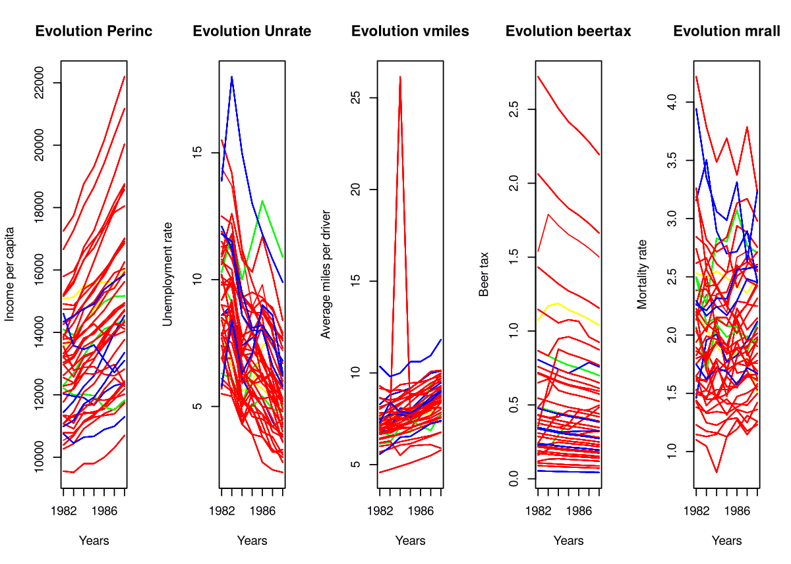
As can be seen in the plots, not much can be concluded, since we have many states in a limited space and they overlap, which prevents drawing conclusions. But we can see that there is a clear outlier in the plot of the evolution of vmiles.
We can get those values and check whether it is really an outlier.
Show code
print(which.max(data$vmiles)) #We get the position of the value## [1] 171Show code
print(data$vmiles[170:176]) #We look at the evolution of this state and it is clearly an outlier.## [1] 7.226798 26.148271 7.505625 7.867966 8.212686 8.368896 7.304109Another conclusion that could be drawn is that red clearly predominates. Using the counters we have already used, we can make a pie chart to see how many states there are with each type of law.
2.2 Pie chart
Show code
# Pie chart
layout(1)
slices <- c(contNN,contYN,contYY,contNY)
PorcentajeNN<-contNN/48*100
PorcentajeNY<-contNY/48*100
PorcentajeYN<-contYN/48*100
PorcentajeYY<-contYY/48*100
lbls <- c("No - No 77%", "Yes - No 12.5%", "Yes - Yes 6.25%", "No - Yes 4.16%")
#No-No - No jail and No community service
#No-Yes - No jail and Yes community service
#Yes-No - Yes jail and No community service
#Yes-Yes - Yes jail and Yes community service
pie(slices, labels = lbls, main="Number of states with different laws",col=c("red","blue","green","yellow"))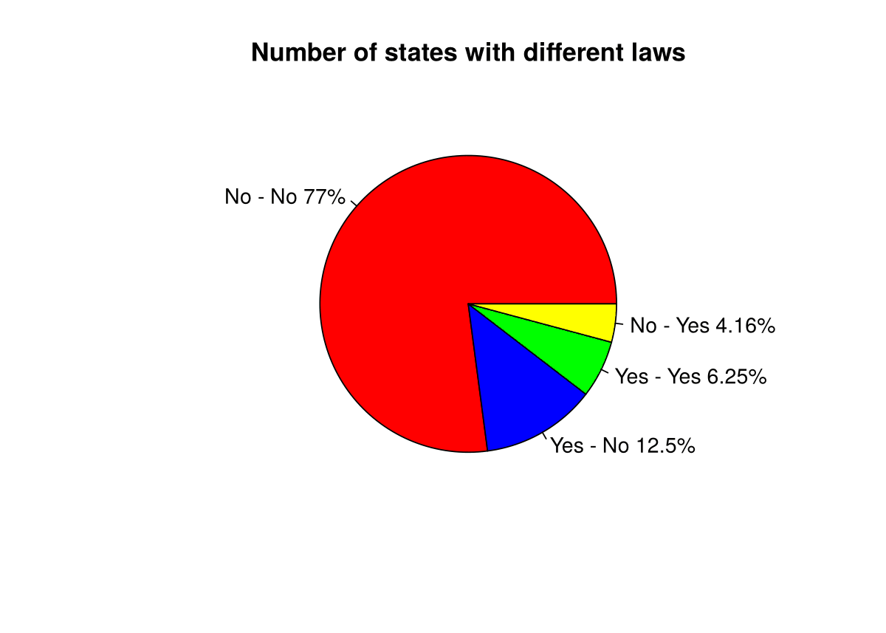
As mentioned before, the vast majority are states with neither jail nor community service, 37 states to be exact. The states that follow other laws are 12.5%, 6.25% and 4.16% respectively, which correspond to 6, 3 and 2 states.
Going back to the first plot, as no more conclusions can be drawn, it is interesting to compute the mean of the states depending on their laws. It would also be interesting to ask whether the states with different laws are statistically significantly different in several categories. That is, is it statistically significant (on average) that there is more or less unemployment, mortality rate, beer tax, personal income and average miles driven depending on the type of law that a state follows?
2.3 Mean evolution by laws
To compute the new plot, we add everything up and divide by the number of states that follow that type of law.
Show code
#We initialise the vectors
i<-1
#Personal Income
VectorNNperinc<-as.numeric(vector(length = 7))
VectorYYperinc<-as.numeric(vector(length = 7))
VectorYNperinc<-as.numeric(vector(length = 7))
VectorNYperinc<-as.numeric(vector(length = 7))
#Unrate
VectorNNunrate<-as.numeric(vector(length = 7))
VectorYYunrate<-as.numeric(vector(length = 7))
VectorYNunrate<-as.numeric(vector(length = 7))
VectorNYunrate<-as.numeric(vector(length = 7))
#Vmiles
VectorNNvmiles<-as.numeric(vector(length = 7))
VectorYYvmiles<-as.numeric(vector(length = 7))
VectorYNvmiles<-as.numeric(vector(length = 7))
VectorNYvmiles<-as.numeric(vector(length = 7))
#Beertax
VectorNNbeertax<-as.numeric(vector(length = 7))
VectorYYbeertax<-as.numeric(vector(length = 7))
VectorYNbeertax<-as.numeric(vector(length = 7))
VectorNYbeertax<-as.numeric(vector(length = 7))
#Mrall
VectorNNmrall<-as.numeric(vector(length = 7))
VectorYYmrall<-as.numeric(vector(length = 7))
VectorYNmrall<-as.numeric(vector(length = 7))
VectorNYmrall<-as.numeric(vector(length = 7))
while (i<dim(data)[1]) {
if (data$jaild[i]=="yes" && data$comserd[i]=="yes") {
j<-1
VectorYYperinc[j:(j+6)]<-data$perinc[i:(i+6)]+VectorYYperinc[j:(j+6)]
VectorYYunrate[j:(j+6)]<-data$unrate[i:(i+6)]+VectorYYunrate[j:(j+6)]
VectorYYvmiles[j:(j+6)]<-data$vmiles[i:(i+6)]+VectorYYvmiles[j:(j+6)]
VectorYYbeertax[j:(j+6)]<-data$beertax[i:(i+6)]+VectorYYbeertax[j:(j+6)]
VectorYYmrall[j:(j+6)]<-data$mrall[i:(i+6)]+VectorYYmrall[j:(j+6)]
}
if (data$jaild[i]=="no" && data$comserd[i]=="no") {
j<-1
VectorNNperinc[j:(j+6)]<-data$perinc[i:(i+6)]+VectorNNperinc[j:(j+6)]
VectorNNunrate[j:(j+6)]<-data$unrate[i:(i+6)]+VectorNNunrate[j:(j+6)]
VectorNNvmiles[j:(j+6)]<-data$vmiles[i:(i+6)]+VectorNNvmiles[j:(j+6)]
VectorNNbeertax[j:(j+6)]<-data$beertax[i:(i+6)]+VectorNNbeertax[j:(j+6)]
VectorNNmrall[j:(j+6)]<-data$mrall[i:(i+6)]+VectorNNmrall[j:(j+6)]
}
if (data$jaild[i]=="yes" && data$comserd[i]=="no") {
j<-1
VectorYNperinc[j:(j+6)]<-data$perinc[i:(i+6)]+VectorYNperinc[j:(j+6)]
VectorYNunrate[j:(j+6)]<-data$unrate[i:(i+6)]+VectorYNunrate[j:(j+6)]
VectorYNvmiles[j:(j+6)]<-data$vmiles[i:(i+6)]+VectorYNvmiles[j:(j+6)]
VectorYNbeertax[j:(j+6)]<-data$beertax[i:(i+6)]+VectorYNbeertax[j:(j+6)]
VectorYNmrall[j:(j+6)]<-data$mrall[i:(i+6)]+VectorYNmrall[j:(j+6)]
}
if (data$jaild[i]=="no" && data$comserd[i]=="yes") {
j<-1
VectorNYperinc[j:(j+6)]<-data$perinc[i:(i+6)]+VectorNYperinc[j:(j+6)]
VectorNYunrate[j:(j+6)]<-data$unrate[i:(i+6)]+VectorNYunrate[j:(j+6)]
VectorNYvmiles[j:(j+6)]<-data$vmiles[i:(i+6)]+VectorNYvmiles[j:(j+6)]
VectorNYbeertax[j:(j+6)]<-data$beertax[i:(i+6)]+VectorNYbeertax[j:(j+6)]
VectorNYmrall[j:(j+6)]<-data$mrall[i:(i+6)]+VectorNYmrall[j:(j+6)]
}
i=i+7
}
#We compute the mean
#Perinc
VectorNNperinc<-VectorNNperinc/contNN
VectorNYperinc<-VectorNYperinc/contNY
VectorYNperinc<-VectorYNperinc/contYN
VectorYYperinc<-VectorYYperinc/contYY
#Unrate
VectorNNunrate<-VectorNNunrate/contNN
VectorNYunrate<-VectorNYunrate/contNY
VectorYNunrate<-VectorYNunrate/contYN
VectorYYunrate<-VectorYYunrate/contYY
#Vmiles
VectorNNvmiles<-VectorNNvmiles/contNN
VectorNYvmiles<-VectorNYvmiles/contNY
VectorYNvmiles<-VectorYNvmiles/contYN
VectorYYvmiles<-VectorYYvmiles/contYY
#Beertax
VectorNNbeertax<-VectorNNbeertax/contNN
VectorNYbeertax<-VectorNYbeertax/contNY
VectorYNbeertax<-VectorYNbeertax/contYN
VectorYYbeertax<-VectorYYbeertax/contYY
#Mrall
VectorNNmrall<-VectorNNmrall/contNN
VectorNYmrall<-VectorNYmrall/contNY
VectorYNmrall<-VectorYNmrall/contYN
VectorYYmrall<-VectorYYmrall/contYY
layout(grid) #Five plots in one row
#Perinc
plot(data$year[1:7],VectorNNperinc,type = "l",col="red",ylim = c(12200,16000),xlab = "Years", ylab = "Income per capita", main = "Mean evol. perinc")
lines(data$year[1:7],VectorYYperinc,type = "l",col="green")
lines(data$year[1:7],VectorNYperinc,type = "l",col="yellow")
lines(data$year[1:7],VectorYNperinc,type = "l",col="blue")
#Unrate
plot(data$year[1:7],VectorNNunrate,type = "l",col="red",ylim= c(5.1,11.2),xlab = "Years", ylab = "Unemployment rate", main = "Mean evol. unrate")
lines(data$year[1:7],VectorYYunrate,type = "l",col="green")
lines(data$year[1:7],VectorNYunrate,type = "l",col="yellow")
lines(data$year[1:7],VectorYNunrate,type = "l",col="blue")
#Vmiles
plot(data$year[1:7],VectorNNvmiles,type = "l",col="red",ylim = c(6.75,9.5),xlab = "Years", ylab = "Average miles per driver", main = "Mean evol. vmiles")
lines(data$year[1:7],VectorYYvmiles,type = "l",col="green")
lines(data$year[1:7],VectorNYvmiles,type = "l",col="yellow")
lines(data$year[1:7],VectorYNvmiles,type = "l",col="blue")
#Beertax
plot(data$year[1:7],VectorNNbeertax,type = "l",col="red",ylim = c(0.3,0.7),xlab = "Years", ylab = "Beer tax", main = "Mean evol. beertax")
lines(data$year[1:7],VectorYYbeertax,type = "l",col="green")
lines(data$year[1:7],VectorNYbeertax,type = "l",col="yellow")
lines(data$year[1:7],VectorYNbeertax,type = "l",col="blue")
#Mrall
plot(data$year[1:7],VectorNNmrall,type = "l",col="red",ylim = c(1.8,2.5),xlab = "Years", ylab = "Mortality rate", main = "Mean evol. mrall")
lines(data$year[1:7],VectorYYmrall,type = "l",col="green")
lines(data$year[1:7],VectorNYmrall,type = "l",col="yellow")
lines(data$year[1:7],VectorYNmrall,type = "l",col="blue")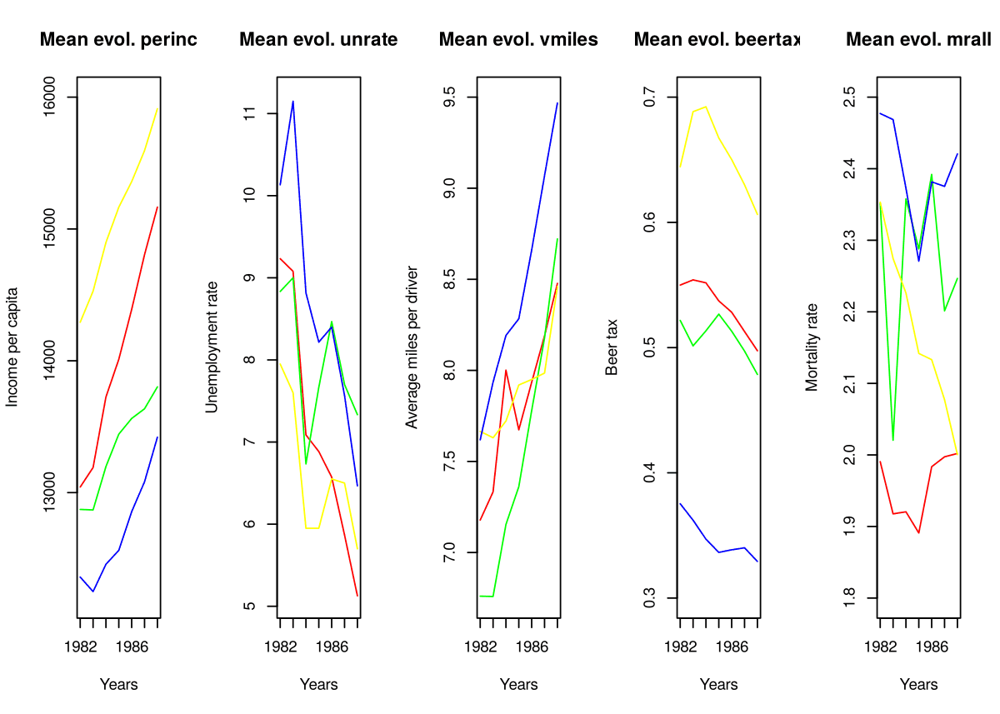
In this plot the trends can be seen more clearly. It seems that, on average, the evolution of income per capita in all states, regardless of the laws, increases and unemployment decreases. It also seems that the average miles driven per driver increase, while beer tax and mortality rate stay constant or decrease slightly overall.
Likewise, the best results or best evolution in all categories seem to belong to the yellow line. That is, the states that follow this law: No jail and Yes community service.
We can see that the outlier we had before in the third plot has been absorbed and in its place we only see a small peak. This is because we have many states with that type of laws and therefore, when taking the mean, it has decreased or turned into a more normal value.
We cannot say whether this change has happened in the states that follow other laws since we do not have many states and therefore we do not know whether their data have outliers or not. So, the data obtained from the observations may not be representing well what the states with those laws really experience. This will have to be taken into account when performing the different statistics and also in the conclusions.
2.4 Boxplot, mean evolution by laws
Next, we will draw the same plots but as boxplots, to visualise the data better and see whether we have outliers.
Show code
layout(grid)
boxplot(VectorNNperinc,VectorNYperinc,VectorYNperinc,VectorYYperinc,col = c("red","yellow","blue","green"),names = c("No-No","No-Yes","Yes-No","Yes-Yes"),main="Mean evol. perinc")
boxplot(VectorNNunrate,VectorNYunrate,VectorYNunrate,VectorYYunrate,col = c("red","yellow","blue","green"),names = c("No-No","No-Yes","Yes-No","Yes-Yes"),main="Mean evol. unrate")
boxplot(VectorNNvmiles,VectorNYvmiles,VectorYNvmiles,VectorYYvmiles,col = c("red","yellow","blue","green"),names = c("No-No","No-Yes","Yes-No","Yes-Yes"),main="Mean evol. vmiles")
boxplot(VectorNNbeertax,VectorNYbeertax,VectorYNbeertax,VectorYYbeertax,col = c("red","yellow","blue","green"),names = c("No-No","No-Yes","Yes-No","Yes-Yes"),main="Mean evol. beertax")
boxplot(VectorNNmrall,VectorNYmrall,VectorYNmrall,VectorYYmrall,col = c("red","yellow","blue","green"),names = c("No-No","No-Yes","Yes-No","Yes-Yes"),main="Mean evol. mrall")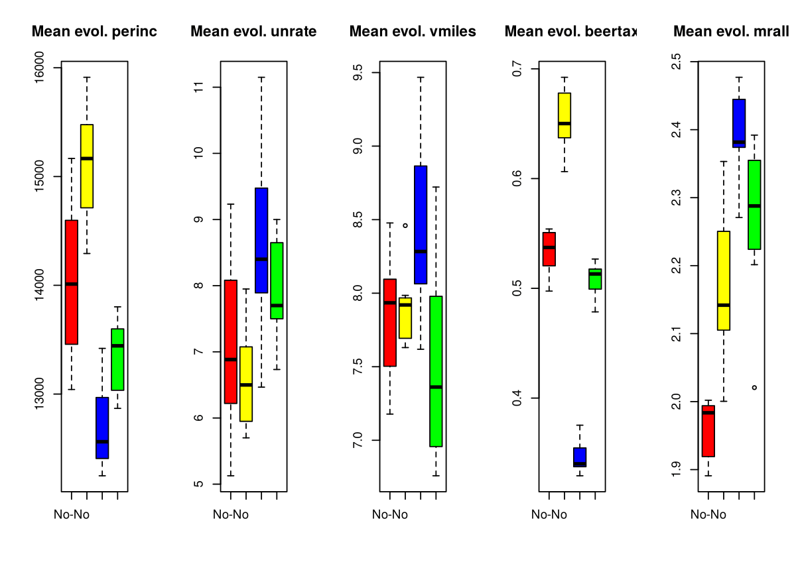
Apparently, the means may be, or seem to be, different. We only have two outliers, one in the yellow box of plot 3 and another in the green one of the last plot.
As I said before, we can see that the outlier of the red group in plot 3 has become a normal value.
2.5 Shapiro test
We will see whether these values come from a normal distribution or not, in order to apply a test of difference of means.
Show code
#Shapiro.test to see how normal our data are
#Shapiro Perinc
print(shapiro.test(VectorNNperinc))##
## Shapiro-Wilk normality test
##
## data: VectorNNperinc
## W = 0.95825, p-value = 0.8036Show code
print(shapiro.test(VectorNYperinc))##
## Shapiro-Wilk normality test
##
## data: VectorNYperinc
## W = 0.97883, p-value = 0.9537Show code
print(shapiro.test(VectorYNperinc))##
## Shapiro-Wilk normality test
##
## data: VectorYNperinc
## W = 0.93055, p-value = 0.5555Show code
print(shapiro.test(VectorYYperinc))##
## Shapiro-Wilk normality test
##
## data: VectorYYperinc
## W = 0.90873, p-value = 0.3871Show code
#Shapiro Unrate
print(shapiro.test(VectorNNunrate))##
## Shapiro-Wilk normality test
##
## data: VectorNNunrate
## W = 0.91483, p-value = 0.4303Show code
print(shapiro.test(VectorNYunrate))##
## Shapiro-Wilk normality test
##
## data: VectorNYunrate
## W = 0.87902, p-value = 0.2221Show code
print(shapiro.test(VectorYNunrate))##
## Shapiro-Wilk normality test
##
## data: VectorYNunrate
## W = 0.97477, p-value = 0.9305Show code
print(shapiro.test(VectorYYunrate))##
## Shapiro-Wilk normality test
##
## data: VectorYYunrate
## W = 0.94402, p-value = 0.6752Show code
#Shapiro vmiles
print(shapiro.test(VectorNNvmiles))##
## Shapiro-Wilk normality test
##
## data: VectorNNvmiles
## W = 0.96814, p-value = 0.8848Show code
print(shapiro.test(VectorNYvmiles))##
## Shapiro-Wilk normality test
##
## data: VectorNYvmiles
## W = 0.86423, p-value = 0.1651Show code
print(shapiro.test(VectorYNvmiles))##
## Shapiro-Wilk normality test
##
## data: VectorYNvmiles
## W = 0.97075, p-value = 0.9038Show code
print(shapiro.test(VectorYYvmiles))##
## Shapiro-Wilk normality test
##
## data: VectorYYvmiles
## W = 0.92999, p-value = 0.5508Show code
#Shapiro beertax
print(shapiro.test(VectorNNbeertax))##
## Shapiro-Wilk normality test
##
## data: VectorNNbeertax
## W = 0.89985, p-value = 0.3301Show code
print(shapiro.test(VectorNYbeertax))##
## Shapiro-Wilk normality test
##
## data: VectorNYbeertax
## W = 0.95968, p-value = 0.8159Show code
print(shapiro.test(VectorYNbeertax))##
## Shapiro-Wilk normality test
##
## data: VectorYNbeertax
## W = 0.9011, p-value = 0.3377Show code
print(shapiro.test(VectorYYbeertax))##
## Shapiro-Wilk normality test
##
## data: VectorYYbeertax
## W = 0.94578, p-value = 0.6912Show code
#Shapiro mrall
print(shapiro.test(VectorNNmrall))##
## Shapiro-Wilk normality test
##
## data: VectorNNmrall
## W = 0.83769, p-value = 0.09455Show code
print(shapiro.test(VectorNYmrall))##
## Shapiro-Wilk normality test
##
## data: VectorNYmrall
## W = 0.98356, p-value = 0.975Show code
print(shapiro.test(VectorYNmrall))##
## Shapiro-Wilk normality test
##
## data: VectorYNmrall
## W = 0.91765, p-value = 0.4514Show code
print(shapiro.test(VectorYYmrall))##
## Shapiro-Wilk normality test
##
## data: VectorYYmrall
## W = 0.88957, p-value = 0.2724Looking at these results, we can conclude that the data are reasonably normal and that we can therefore apply the test of difference of means. As we have more than 2 groups, in each plot we will have to use the ANOVA test instead of the t.test.
2.6 ANOVA test
Our null hypothesis is that there is no difference between the means of the 5 groups in each category. That is, that on average, depending on the type of laws a state follows, its means are equal for perinc, unrate, vmiles, beertax and mrall. Therefore, the alternative hypothesis is that there is a difference between the means.
Show code
DatosAnova<-data.frame(Grupo1 = NA,perinc=NA,Grupo2 = NA,unrate=NA,Grupo3=NA,vmiles=NA,Grupo4=NA,beertax=NA,Grupo5=NA,mrall=NA)
for (i in 1:(7*4)) {
if (i<8) {
DatosAnova[i,1]<-"VectorNYperinc"
DatosAnova[i,2]<-VectorNYperinc[i]
DatosAnova[i,3]<-"VectorNYunrate"
DatosAnova[i,4]<-VectorNYunrate[i]
DatosAnova[i,5]<-"VectorNYvmiles"
DatosAnova[i,6]<-VectorNYvmiles[i]
DatosAnova[i,7]<-"VectorNYbeertax"
DatosAnova[i,8]<-VectorNYbeertax[i]
DatosAnova[i,9]<-"VectorNYmrall"
DatosAnova[i,10]<-VectorNYmrall[i]
}
if (i>7 && i<15) {
DatosAnova[i,1]<-"VectorNNperinc"
DatosAnova[i,2]<-VectorNNperinc[i-7]
DatosAnova[i,3]<-"VectorNNunrate"
DatosAnova[i,4]<-VectorNNunrate[i-7]
DatosAnova[i,5]<-"VectorNNvmiles"
DatosAnova[i,6]<-VectorNNvmiles[i-7]
DatosAnova[i,7]<-"VectorNNbeertax"
DatosAnova[i,8]<-VectorNNbeertax[i-7]
DatosAnova[i,9]<-"VectorNNmrall"
DatosAnova[i,10]<-VectorNNmrall[i-7]
}
if (i>14 && i<23) {
DatosAnova[i,1]<-"VectorYNperinc"
DatosAnova[i,2]<-VectorYNperinc[i-14]
DatosAnova[i,3]<-"VectorYNunrate"
DatosAnova[i,4]<-VectorYNunrate[i-14]
DatosAnova[i,5]<-"VectorYNvmiles"
DatosAnova[i,6]<-VectorYNvmiles[i-14]
DatosAnova[i,7]<-"VectorYNbeertax"
DatosAnova[i,8]<-VectorYNbeertax[i-14]
DatosAnova[i,9]<-"VectorYNmrall"
DatosAnova[i,10]<-VectorYNmrall[i-14]
}
if (i>21) {
DatosAnova[i,1]<-"VectorYYperinc"
DatosAnova[i,2]<-VectorYYperinc[i-21]
DatosAnova[i,3]<-"VectorYYunrate"
DatosAnova[i,4]<-VectorYYunrate[i-21]
DatosAnova[i,5]<-"VectorYYvmiles"
DatosAnova[i,6]<-VectorYYvmiles[i-21]
DatosAnova[i,7]<-"VectorYYbeertax"
DatosAnova[i,8]<-VectorYYbeertax[i-21]
DatosAnova[i,9]<-"VectorYYmrall"
DatosAnova[i,10]<-VectorYYmrall[i-21]
}
}
Result.Aov.perinc<-aov(DatosAnova$perinc ~ DatosAnova$Grupo1)
Result.Aov.unrate<-aov(DatosAnova$unrate ~ DatosAnova$Grupo2)
Result.Aov.vmiles<-aov(DatosAnova$vmiles ~ DatosAnova$Grupo3)
Result.Aov.beertax<-aov(DatosAnova$beertax ~ DatosAnova$Grupo4)
Result.Aov.mrall<-aov(DatosAnova$mrall ~ DatosAnova$Grupo5)
summary(Result.Aov.perinc)## Df Sum Sq Mean Sq F value Pr(>F)
## DatosAnova$Grupo1 3 22149838 7383279 23.02 3.04e-07 ***
## Residuals 24 7697474 320728
## ---
## Signif. codes: 0 '***' 0.001 '**' 0.01 '*' 0.05 '.' 0.1 ' ' 1Show code
summary(Result.Aov.unrate)## Df Sum Sq Mean Sq F value Pr(>F)
## DatosAnova$Grupo2 3 17.66 5.887 3.768 0.0239 *
## Residuals 24 37.50 1.562
## ---
## Signif. codes: 0 '***' 0.001 '**' 0.01 '*' 0.05 '.' 0.1 ' ' 1Show code
summary(Result.Aov.vmiles)## Df Sum Sq Mean Sq F value Pr(>F)
## DatosAnova$Grupo3 3 3.170 1.0566 3.363 0.0353 *
## Residuals 24 7.541 0.3142
## ---
## Signif. codes: 0 '***' 0.001 '**' 0.01 '*' 0.05 '.' 0.1 ' ' 1Show code
summary(Result.Aov.beertax)## Df Sum Sq Mean Sq F value Pr(>F)
## DatosAnova$Grupo4 3 0.3353 0.11175 227.9 <2e-16 ***
## Residuals 24 0.0118 0.00049
## ---
## Signif. codes: 0 '***' 0.001 '**' 0.01 '*' 0.05 '.' 0.1 ' ' 1Show code
summary(Result.Aov.mrall)## Df Sum Sq Mean Sq F value Pr(>F)
## DatosAnova$Grupo5 3 0.7136 0.23788 25.25 1.34e-07 ***
## Residuals 24 0.2261 0.00942
## ---
## Signif. codes: 0 '***' 0.001 '**' 0.01 '*' 0.05 '.' 0.1 ' ' 1All the p-values turned out significant, so we have to reject the null hypothesis. We can then say that, on average, there is a difference in all categories and that a state having one type of laws or another really matters.
Being purists, since we have two outliers in plots 3 and 5 we cannot use the t.test, or its extension for more than two groups, ANOVA. For these we would have to use a test of difference of medians, that is, the Wilcoxon test. But, as we have more than two groups, we would have to use its extension, the Kruskal test.
2.7 Kruskal test
What we would expect is that the p-values increase, but we do not know whether they will still be statistically significant or not.
Show code
#Kruskal test on plots 3 and 5
kruskal.test(DatosAnova$vmiles ~ DatosAnova$Grupo3)##
## Kruskal-Wallis rank sum test
##
## data: DatosAnova$vmiles by DatosAnova$Grupo3
## Kruskal-Wallis chi-squared = 6.3568, df = 3, p-value = 0.09548Show code
kruskal.test(DatosAnova$mrall ~ DatosAnova$Grupo5)##
## Kruskal-Wallis rank sum test
##
## data: DatosAnova$mrall by DatosAnova$Grupo5
## Kruskal-Wallis chi-squared = 20.835, df = 3, p-value = 0.0001139The null hypothesis is still rejected in plot 5, but now in plot 3 it tells us that the means of the groups are no longer different, since the p-value is greater than 0.05.
Therefore, we can say that it does matter whether states have one type of laws or another in all categories or, being purists, in all except the average miles driven by drivers.
Likewise, we also have to take into account that, as mentioned before, the yellow, blue and green groups may not represent 100% of what states with those types of laws really experience, because there are few states in our data.
3. General simple linear regression
We will look by eye at whether there is any possible linear relationship between the different categories. We make all possible combinations regardless of the laws, that is, we look for any linear relationship using all the data in general.
Show code
layout(grid)
#Combination 1
plot(data$perinc,data$unrate,xlab = "Personal income",ylab = "Unemployment rate")
plot(data$perinc,data$vmiles,xlab = "Personal income",ylab = "Average miles")
plot(data$perinc,data$beertax,xlab = "Personal income",ylab = "Beer tax")
plot(data$perinc,data$mrall,xlab = "Personal income",ylab = "Mortality rate")
plot(data$unrate,data$vmiles,xlab = "Unemployment rate", ylab = "Average miles")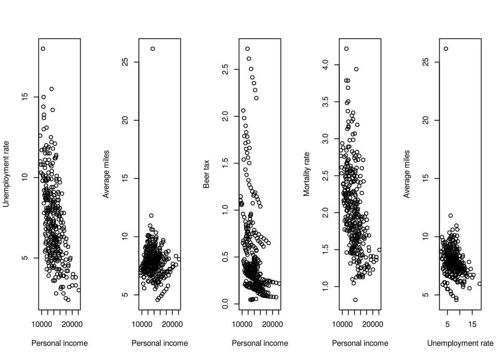
Show code
#Combination 2
plot(data$unrate,data$beertax,xlab = "Unemployment rate",ylab = "Beer tax")
plot(data$unrate,data$mrall,xlab = "Unemployment rate",ylab = "Mortality rate")
plot(data$vmiles,data$beertax,xlab = "Average miles",ylab = "Beer tax")
plot(data$vmiles,data$mrall,xlab = "Average miles",ylab = "Mortality rate")
plot(data$beertax,data$mrall,xlab = "Beer tax",ylab = "Mortality rate")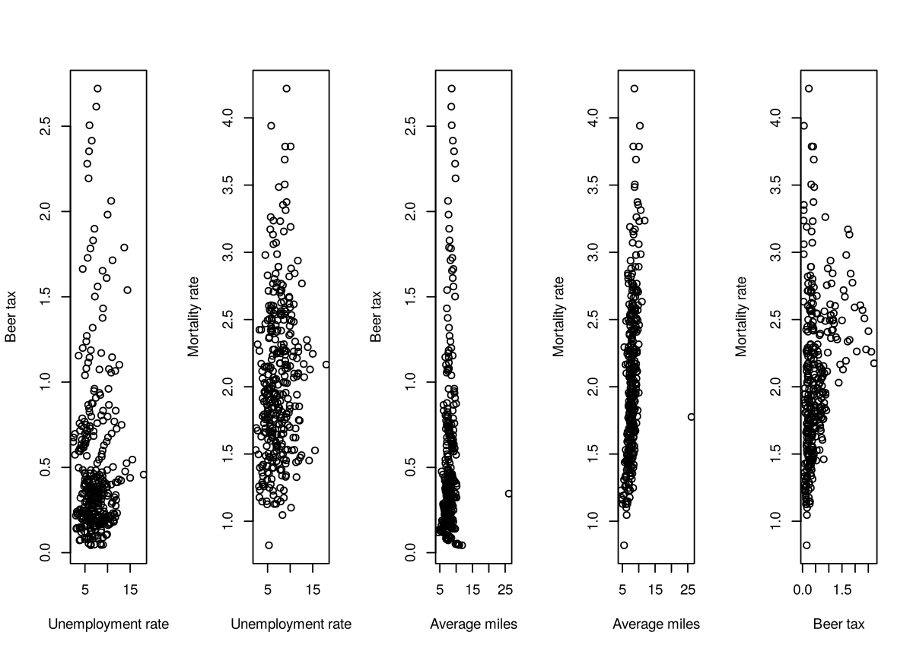
Apparently, there are no linear relationships and many seem to have no correlation, or one does not seem to depend on the other. In my opinion, it would only be interesting to do a simple linear regression of perinc vs unrate and perinc vs mrall, since these are the most likely to have a more or less decent linear relationship.
3.1 Perinc vs Unrate
Show code
#Perinc vs unrate
perincout<-data$perinc
unrateout<-data$unrate
perinc.unrate.lm<-lm(unrateout ~ perincout)
summary(perinc.unrate.lm)##
## Call:
## lm(formula = unrateout ~ perincout)
##
## Residuals:
## Min 1Q Median 3Q Max
## -4.4452 -1.4446 -0.1475 1.2085 8.5191
##
## Coefficients:
## Estimate Std. Error t value Pr(>|t|)
## (Intercept) 1.599e+01 7.205e-01 22.19 <2e-16 ***
## perincout -6.225e-04 5.124e-05 -12.15 <2e-16 ***
## ---
## Signif. codes: 0 '***' 0.001 '**' 0.01 '*' 0.05 '.' 0.1 ' ' 1
##
## Residual standard error: 2.113 on 334 degrees of freedom
## Multiple R-squared: 0.3065, Adjusted R-squared: 0.3044
## F-statistic: 147.6 on 1 and 334 DF, p-value: < 2.2e-16Show code
#As can be seen, the p-value of beta1, the intercept and the linear regression are very significant. However, R-squared is not very good and, according to the result, we only predict well 30% of the time.
#The errors must follow a normal distribution with mean 0
grid1<-matrix(c(1,2),ncol = 2,nrow = 1)
layout(grid1)
plot(perinc.unrate.lm[["residuals"]],xlab = "Observation number",ylab = "Error",main = "Error in each observation")
mean(perinc.unrate.lm[["residuals"]]) #It is practically 0## [1] 9.603192e-17Show code
abline(h=mean(perinc.unrate.lm[["residuals"]]))
plot(density(perinc.unrate.lm[["residuals"]]),ylab = "Density",main = "Error density function")
shapiro.test(perinc.unrate.lm[["residuals"]]) #We state that they are normal##
## Shapiro-Wilk normality test
##
## data: perinc.unrate.lm[["residuals"]]
## W = 0.97767, p-value = 4.449e-05Show code
#"Theoretical"
x<-seq(-10,10,0.01)
desviacionestandar<-sd(perinc.unrate.lm[["residuals"]])
lines(x,dnorm(x,0,desviacionestandar),col="red")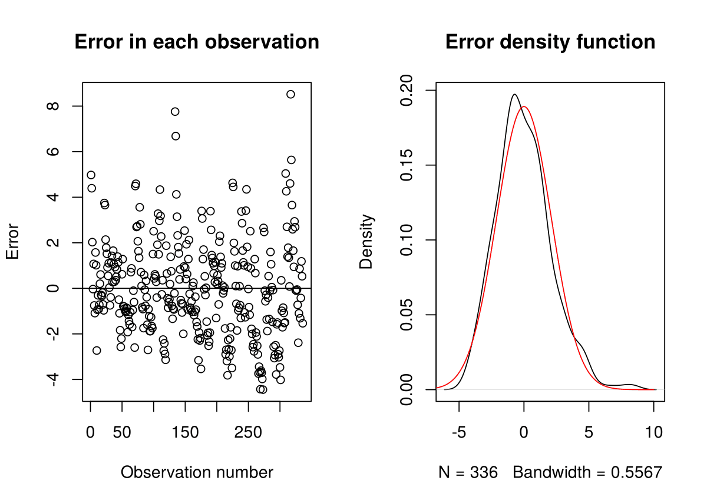
As we can see, the errors follow a normal distribution with zero mean. Even so, they are not evenly spread. We can see that there are more errors concentrated on the negative side than on the positive one, and the large positive values pull the mean towards zero.
In the density plot, there is a red line overlapping the density function of the errors. This corresponds to the “theoretical” density function that the errors would follow with the same variance, and with this we can confirm what is described in the previous paragraph: the errors are concentrated on the negative side.
Show code
#We draw the 95% confidence intervals
layout(1)
plot(data$perinc,data$unrate,cex=0.5,xlab = "Personal income",ylab = "Unemployment rate",main = "Change in the unemployment rate with income",sub = "95% confidence interval")
abline(perinc.unrate.lm)
new<-data.frame(perincout=seq(9000,23070,42))
prediccionrecta <- predict(perinc.unrate.lm, new, interval = 'confidence')
lines(seq(9000,23070,42),(prediccionrecta[, 2]), lty = 2)
lines(seq(9000,23070,42),(prediccionrecta[, 3]), lty = 2)
prediccionrecta <- predict(perinc.unrate.lm, new, interval = 'prediction')
lines(seq(9000,23070,42),(prediccionrecta[, 2]), lty = 2,col="red")
lines(seq(9000,23070,42),(prediccionrecta[, 3]), lty = 2,col="red")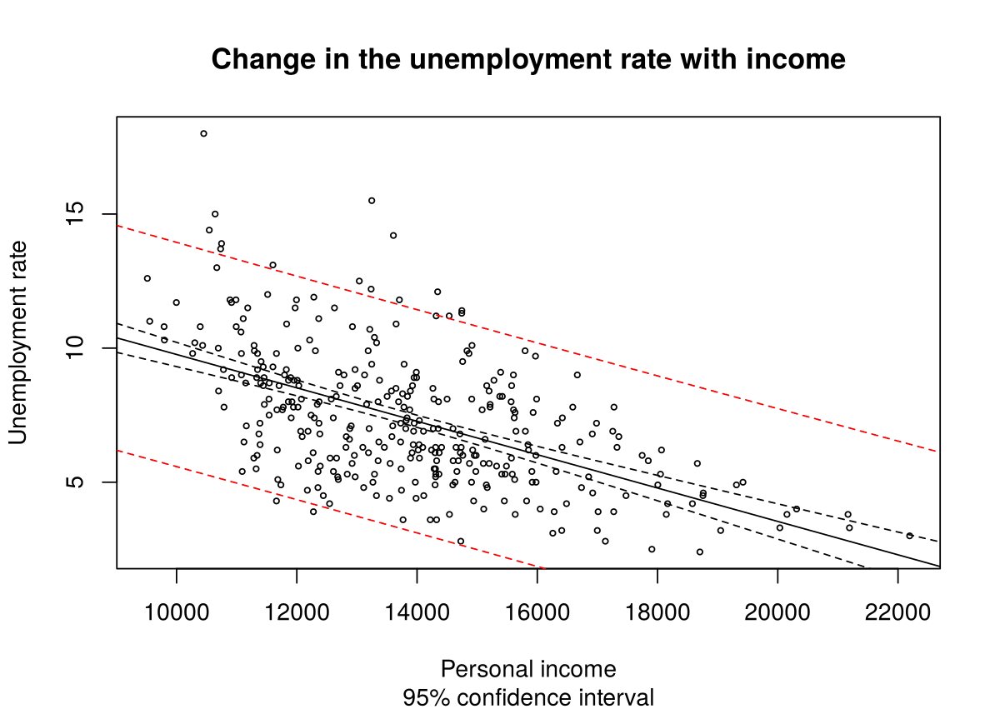
With the black intermediate lines, we are predicting with 95% confidence where the value of the regression line will fall. The red intermediate lines tell us, with 95% confidence, the probability that any individual point lies between these two.
Therefore, although we are getting it right 30% of the time, we can say that there is a relationship between the two variables. We can see that, as personal income increases, the unemployment rate decreases.
3.2 Perinc vs Mrall
We will follow the same steps but now for personal income and the mortality rate.
Show code
#Perinc vs mrall
mrallout<-data$mrall
perinc.mrall.lm<-lm(mrallout ~ perincout)
summary(perinc.mrall.lm)##
## Call:
## lm(formula = mrallout ~ perincout)
##
## Residuals:
## Min 1Q Median 3Q Max
## -1.16471 -0.33899 -0.07772 0.25583 1.99163
##
## Coefficients:
## Estimate Std. Error t value Pr(>|t|)
## (Intercept) 3.7926423 0.1687638 22.47 <2e-16 ***
## perincout -0.0001262 0.0000120 -10.52 <2e-16 ***
## ---
## Signif. codes: 0 '***' 0.001 '**' 0.01 '*' 0.05 '.' 0.1 ' ' 1
##
## Residual standard error: 0.4949 on 334 degrees of freedom
## Multiple R-squared: 0.2488, Adjusted R-squared: 0.2466
## F-statistic: 110.6 on 1 and 334 DF, p-value: < 2.2e-16Show code
#As before, the p-values are very significant but R-squared tells us we only get it right 24% of the time. So this regression is worse than the previous one and therefore the unemployment rate predicts income better than the mortality rate
#The errors must follow a normal distribution with mean 0
layout(grid1)
plot(perinc.mrall.lm[["residuals"]],xlab = "Observation number",ylab = "Error",main = "Error in each observation")
mean(perinc.mrall.lm[["residuals"]]) #It is 0## [1] -2.626544e-17Show code
abline(h=mean(perinc.mrall.lm[["residuals"]]))
plot(density(perinc.mrall.lm[["residuals"]]),ylab = "Density",main = "Error density function")
x<-seq(-2,2,0.01)
desviacionestandar<-sd(perinc.mrall.lm[["residuals"]])
lines(x,dnorm(x,0,desviacionestandar),col="red")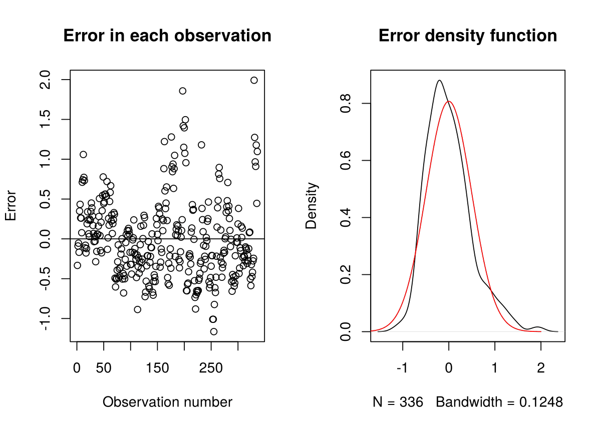
Show code
shapiro.test(perinc.mrall.lm[["residuals"]]) #We state that they are normal##
## Shapiro-Wilk normality test
##
## data: perinc.mrall.lm[["residuals"]]
## W = 0.95749, p-value = 2.692e-08As in the previous linear regression, the errors follow a normal distribution with zero mean. Also, from the plot on the right we can say that the errors are concentrated more on the negative side.
Show code
layout(1)
#We draw the 95% confidence intervals
plot(data$perinc,data$mrall,cex=0.5,xlab = "Personal income",ylab = "Mortality rate",main = "Change in the mortality rate with income",sub = "95% confidence interval")
abline(perinc.mrall.lm)
new<-data.frame(perincout=seq(9000,23070,42))
prediccionrecta <- predict(perinc.mrall.lm, new, interval = 'confidence')
lines(seq(9000,23070,42),(prediccionrecta[, 2]), lty = 2)
lines(seq(9000,23070,42),(prediccionrecta[, 3]), lty = 2)
prediccionrecta <- predict(perinc.mrall.lm, new, interval = 'prediction')
lines(seq(9000,23070,42),(prediccionrecta[, 2]), lty = 2,col="red")
lines(seq(9000,23070,42),(prediccionrecta[, 3]), lty = 2,col="red")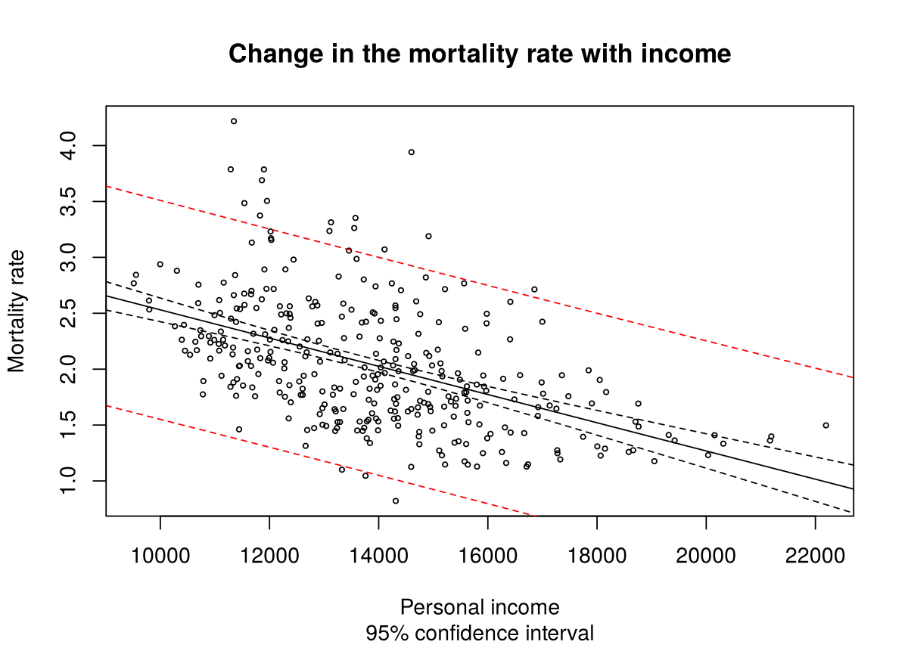
Therefore, looking at the regression we can say that although we are getting it right 24% of the time, as income increases the mortality rate decreases. But this does not mean that one is not the cause of the other, since correlation does not imply causation.
4. General multiple linear regression
Instead of looking at and evaluating which variables are or are not significant for predicting income per capita, we will do it through a multiple linear regression and thus obtain statistical data.
First of all we obtain the full model.
Show code
#We extract the other parameters into vectors outside the data.frame
beertaxout<-data$beertax
vmilesout<-data$vmiles
fullmodel<-lm(perincout ~ unrateout+vmilesout+beertaxout+mrallout)
summary(fullmodel)##
## Call:
## lm(formula = perincout ~ unrateout + vmilesout + beertaxout +
## mrallout)
##
## Residuals:
## Min 1Q Median 3Q Max
## -3385.8 -1035.8 -77.9 1043.0 5361.1
##
## Coefficients:
## Estimate Std. Error t value Pr(>|t|)
## (Intercept) 20998.03 596.15 35.223 < 2e-16 ***
## unrateout -446.34 36.44 -12.247 < 2e-16 ***
## vmilesout -92.87 67.13 -1.383 0.167
## beertaxout -1259.79 184.45 -6.830 4.08e-11 ***
## mrallout -1205.30 175.30 -6.876 3.09e-11 ***
## ---
## Signif. codes: 0 '***' 0.001 '**' 0.01 '*' 0.05 '.' 0.1 ' ' 1
##
## Residual standard error: 1535 on 331 degrees of freedom
## Multiple R-squared: 0.5411, Adjusted R-squared: 0.5355
## F-statistic: 97.57 on 4 and 331 DF, p-value: < 2.2e-16Checking the results, we can see that, with just the full model, we are predicting income per capita better than before. Although the F-statistic came out somewhat worse, the p-value is still just as significant. Also, we have a much smaller standard error and the R-squared rises to 54%. Therefore, we can say that this model predicts better, although we do not know whether it is the best we can get.
To do so, we will select variables using AIC. At first, we expect it to remove vmiles since it is not significant for the model or hinders the prediction, although it does not have to be so and it may even remove other variables.
Show code
#reducedmodelAIC<-stepAIC(fullmodel,direction="backward")
##Note: since I had errors with the stepAIC function in R Markdown, if the previous line does not work, run the following one. It is the result obtained
reducedmodelAIC<-lm(perincout ~ unrateout + beertaxout + mrallout)
#Reduced model
summary(reducedmodelAIC)##
## Call:
## lm(formula = perincout ~ unrateout + beertaxout + mrallout)
##
## Residuals:
## Min 1Q Median 3Q Max
## -3459.7 -998.8 -93.7 1025.0 5368.5
##
## Coefficients:
## Estimate Std. Error t value Pr(>|t|)
## (Intercept) 20348.04 367.44 55.377 < 2e-16 ***
## unrateout -426.93 33.68 -12.675 < 2e-16 ***
## beertaxout -1266.70 184.64 -6.861 3.37e-11 ***
## mrallout -1314.02 156.91 -8.374 1.58e-15 ***
## ---
## Signif. codes: 0 '***' 0.001 '**' 0.01 '*' 0.05 '.' 0.1 ' ' 1
##
## Residual standard error: 1538 on 332 degrees of freedom
## Multiple R-squared: 0.5384, Adjusted R-squared: 0.5343
## F-statistic: 129.1 on 3 and 332 DF, p-value: < 2.2e-16As expected, we have removed the variable vmiles since it made the model worse. Therefore, this would be the model with which we could best approximate income per capita.
We will see whether it is statistically significant that the reduced model obtained is better than the full model.
Show code
#ANOVA to compare models
anova(fullmodel,reducedmodelAIC)## Analysis of Variance Table
##
## Model 1: perincout ~ unrateout + vmilesout + beertaxout + mrallout
## Model 2: perincout ~ unrateout + beertaxout + mrallout
## Res.Df RSS Df Sum of Sq F Pr(>F)
## 1 331 780390390
## 2 332 784902718 -1 -4512328 1.9139 0.1675Show code
#Correlation between parameters
cor(unrateout,beertaxout)## [1] 0.05677184Show code
cor(unrateout,mrallout)## [1] 0.1753446Show code
cor(beertaxout,mrallout)## [1] 0.3055533Analysing the results, we can see that the reduced model predicts personal income better than the full model. However, this model is not statistically significant, since the p-value is not lower than 0.05. In fact, the p-value obtained is equal to that of vmiles in the full model.
Also, the correlation between parameters is low so we can rule out multicollinearity. We can also rule it out by seeing that the p-values of the parameters are significant and, in turn, so is the p-value of the model.
5. Simple linear regression by laws
As in the first part we found that the difference in laws affects the state, I think it is interesting to do the linear regression again but this time distinguishing the laws. In my opinion, we should obtain better models than when doing everything at once.
We draw all the points, but this time they correspond to the average income of all the states depending on their laws.
Show code
plot(VectorNNperinc,VectorNNunrate,col="red",type = "b",cex=0.8,xlim = c(12200,16000),ylim = c(5.1,11.2),xlab = "Personal income",ylab = "Unemployment rate")
lines(VectorYYperinc,VectorYYunrate,col="green",type = "b",cex=0.8)
lines(VectorYNperinc,VectorYNunrate,col="blue",type = "b",cex=0.8)
lines(VectorNYperinc,VectorNYunrate,col="yellow",type = "b",cex=0.8)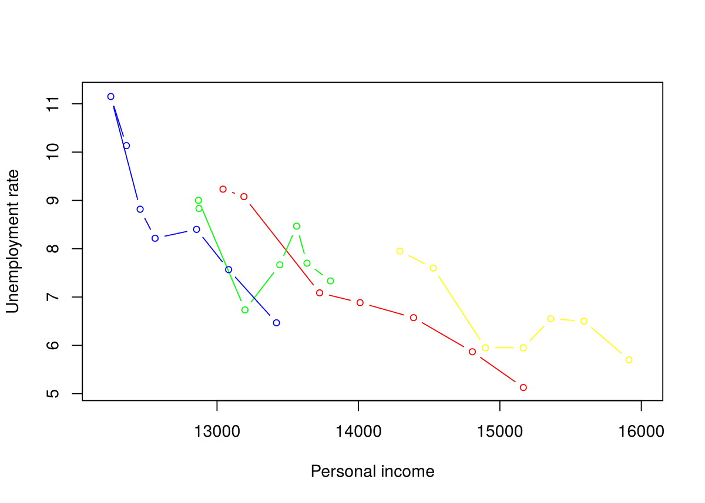
In this way, we can see that there seem to be decent linear relationships. Above all in the red line. In my view, this may be because we have many states, so the average of the states that follow these laws tends to form a trend. It can also be seen that the other colours follow a trend, but it is not as clear as the red one. Therefore, as I just mentioned, this may be because we have a small number of states with their corresponding laws.
We will fit the simple linear model for each one.
Show code
#Model1 - NN
lmNNperincunrate<-lm(VectorNNunrate~VectorNNperinc)
summary(lmNNperincunrate)##
## Call:
## lm(formula = VectorNNunrate ~ VectorNNperinc)
##
## Residuals:
## 1 2 3 4 5 6 7
## 0.2173 0.3420 -0.6412 -0.3047 0.0968 0.1756 0.1143
##
## Coefficients:
## Estimate Std. Error t value Pr(>|t|)
## (Intercept) 33.595195 2.743425 12.246 6.42e-05 ***
## VectorNNperinc -0.001885 0.000195 -9.663 0.000201 ***
## ---
## Signif. codes: 0 '***' 0.001 '**' 0.01 '*' 0.05 '.' 0.1 ' ' 1
##
## Residual standard error: 0.3798 on 5 degrees of freedom
## Multiple R-squared: 0.9492, Adjusted R-squared: 0.939
## F-statistic: 93.38 on 1 and 5 DF, p-value: 0.0002014Show code
#Model2 - YN
lmYNperincunrate<-lm(VectorYNunrate~VectorYNperinc)
summary(lmYNperincunrate)##
## Call:
## lm(formula = VectorYNunrate ~ VectorYNperinc)
##
## Residuals:
## 1 2 3 4 5 6 7
## 0.2713 0.9185 -0.7193 -0.9647 0.2016 0.1290 0.1637
##
## Coefficients:
## Estimate Std. Error t value Pr(>|t|)
## (Intercept) 51.3169339 8.5429544 6.007 0.00184 **
## VectorYNperinc -0.0033542 0.0006717 -4.993 0.00413 **
## ---
## Signif. codes: 0 '***' 0.001 '**' 0.01 '*' 0.05 '.' 0.1 ' ' 1
##
## Residual standard error: 0.6999 on 5 degrees of freedom
## Multiple R-squared: 0.833, Adjusted R-squared: 0.7996
## F-statistic: 24.93 on 1 and 5 DF, p-value: 0.004128Show code
#Model3 - NY
lmNYperincunrate<-lm(VectorNYunrate~VectorNYperinc)
summary(lmNYperincunrate)##
## Call:
## lm(formula = VectorNYunrate ~ VectorNYperinc)
##
## Residuals:
## 1 2 3 4 5 6 7
## 0.38421 0.31368 -0.89867 -0.58094 0.24891 0.47795 0.05485
##
## Coefficients:
## Estimate Std. Error t value Pr(>|t|)
## (Intercept) 24.5099601 6.2103048 3.947 0.0109 *
## VectorNYperinc -0.0011855 0.0004108 -2.886 0.0344 *
## ---
## Signif. codes: 0 '***' 0.001 '**' 0.01 '*' 0.05 '.' 0.1 ' ' 1
##
## Residual standard error: 0.5804 on 5 degrees of freedom
## Multiple R-squared: 0.6248, Adjusted R-squared: 0.5498
## F-statistic: 8.327 on 1 and 5 DF, p-value: 0.03436Show code
#Model4 - YY
lmYYperincunrate<-lm(VectorYYunrate~VectorYYperinc)
summary(lmYYperincunrate)##
## Call:
## lm(formula = VectorYYunrate ~ VectorYYperinc)
##
## Residuals:
## 1 2 3 4 5 6 7
## 0.29793 0.45992 -1.40366 -0.16880 0.77694 0.10042 -0.06276
##
## Coefficients:
## Estimate Std. Error t value Pr(>|t|)
## (Intercept) 24.3092974 11.2372781 2.163 0.0828 .
## VectorYYperinc -0.0012254 0.0008421 -1.455 0.2054
## ---
## Signif. codes: 0 '***' 0.001 '**' 0.01 '*' 0.05 '.' 0.1 ' ' 1
##
## Residual standard error: 0.7638 on 5 degrees of freedom
## Multiple R-squared: 0.2975, Adjusted R-squared: 0.157
## F-statistic: 2.118 on 1 and 5 DF, p-value: 0.2054As expected, there is a linear relationship between personal income and the unemployment rate depending on the laws. The models turn out to be statistically significant and they predict with greater accuracy, except for one. Red is the model with which we have had the best results and green the worst. In fact, the latter did not turn out significant. This leads me to conclude that this type of states may have been harming the model in which the type of laws was not distinguished.
Show code
plot(VectorNNperinc,VectorNNunrate,col="red",type = "p",cex=0.5,xlim = c(12200,16000),ylim = c(5.1,11.2),xlab = "Personal income",ylab = "Unemployment rate",main = "Regression lines by type of law")
lines(VectorYYperinc,VectorYYunrate,col="green",type = "p",cex=0.5)
lines(VectorYNperinc,VectorYNunrate,col="blue",type = "p",cex=0.5)
lines(VectorNYperinc,VectorNYunrate,col="yellow",type = "p",cex=0.5)
#abline
abline(lmNNperincunrate,col="red")
abline(lmYNperincunrate,col="blue")
abline(lmNYperincunrate,col="yellow")
abline(lmYYperincunrate,col="green")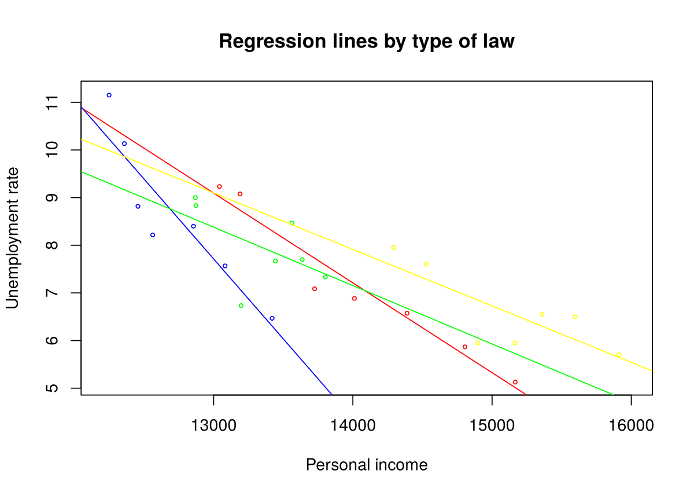
Although the green regression did not turn out significant, we can conclude that all of them have a negative trend. That is, as personal income increases, the unemployment rate decreases.
Looking at the red and the blue (the most significant) we can also conclude that the states that follow the red laws gain more than the blue ones as the rate decreases. This is due to the slope, or beta1, which is larger in blue (-0.0033542) and smaller in red (-0.001885).
We will draw each one with its confidence interval.
Show code
#Confidence intervals in 2x2
grid2<-matrix(c(1,2,3,4),ncol = 2,nrow = 2)
layout(grid2)
#First NN
plot(VectorNNperinc,VectorNNunrate,col="red",type = "p",cex=0.8,xlab = "Personal income",ylab = "Unemployment rate")
abline(lmNNperincunrate,col="red")
new<-data.frame(VectorNNperinc=seq(9000,23070,42))
prediccionrecta <- predict(lmNNperincunrate, new, interval = 'confidence')
lines(seq(9000,23070,42),(prediccionrecta[, 2]), lty = 2)
lines(seq(9000,23070,42),(prediccionrecta[, 3]), lty = 2)
prediccionrecta <- predict(lmNNperincunrate, new, interval = 'prediction')
lines(seq(9000,23070,42),(prediccionrecta[, 2]), lty = 2,col="red")
lines(seq(9000,23070,42),(prediccionrecta[, 3]), lty = 2,col="red")
#Second YN
plot(VectorYNperinc,VectorYNunrate,col="blue",type = "p",cex=0.8,xlab = "Personal income",ylab = "Unemployment rate")
abline(lmYNperincunrate,col="blue")
new<-data.frame(VectorYNperinc=seq(9000,23070,42))
prediccionrecta <- predict(lmYNperincunrate, new, interval = 'confidence')
lines(seq(9000,23070,42),(prediccionrecta[, 2]), lty = 2)
lines(seq(9000,23070,42),(prediccionrecta[, 3]), lty = 2)
prediccionrecta <- predict(lmYNperincunrate, new, interval = 'prediction')
lines(seq(9000,23070,42),(prediccionrecta[, 2]), lty = 2,col="red")
lines(seq(9000,23070,42),(prediccionrecta[, 3]), lty = 2,col="red")
#Third NY
plot(VectorNYperinc,VectorNYunrate,col="yellow",type = "p",cex=0.8,xlab = "Personal income", ylab = "Unemployment rate")
abline(lmNYperincunrate,col="yellow")
new<-data.frame(VectorNYperinc=seq(9000,23070,42))
prediccionrecta <- predict(lmNYperincunrate, new, interval = 'confidence')
lines(seq(9000,23070,42),(prediccionrecta[, 2]), lty = 2)
lines(seq(9000,23070,42),(prediccionrecta[, 3]), lty = 2)
prediccionrecta <- predict(lmNYperincunrate, new, interval = 'prediction')
lines(seq(9000,23070,42),(prediccionrecta[, 2]), lty = 2,col="red")
lines(seq(9000,23070,42),(prediccionrecta[, 3]), lty = 2,col="red")
#Fourth YY
plot(VectorYYperinc,VectorYYunrate,col="green",type = "p",cex=0.8,xlab = "Personal income",ylab = "Unemployment rate")
abline(lmYYperincunrate,col="green")
new<-data.frame(VectorYYperinc=seq(9000,23070,42))
prediccionrecta <- predict(lmYYperincunrate, new, interval = 'confidence')
lines(seq(9000,23070,42),(prediccionrecta[, 2]), lty = 2)
lines(seq(9000,23070,42),(prediccionrecta[, 3]), lty = 2)
prediccionrecta <- predict(lmYYperincunrate, new, interval = 'prediction')
lines(seq(9000,23070,42),(prediccionrecta[, 2]), lty = 2,col="red")
lines(seq(9000,23070,42),(prediccionrecta[, 3]), lty = 2,col="red")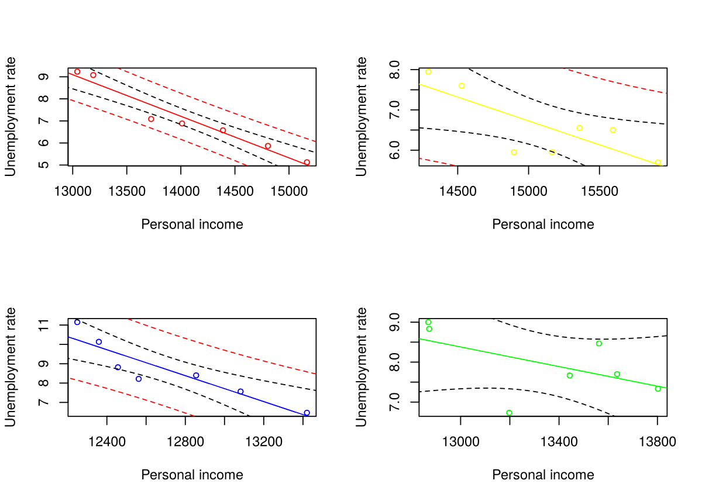
As the summary of the model indicated, we can see that red and blue fit well, whereas yellow and green do not fit the line as well.
We will see how the residuals behave.
Show code
#Error plots
mean(lmNNperincunrate[["residuals"]]) #Practically 0## [1] -1.982928e-17Show code
mean(lmNYperincunrate[["residuals"]]) #Practically 0## [1] -3.971858e-18Show code
mean(lmYNperincunrate[["residuals"]]) #Practically 0## [1] -3.966244e-17Show code
mean(lmYYperincunrate[["residuals"]]) #Practically 0## [1] -4.361397e-17Show code
layout(grid1)
plot(lmNNperincunrate[["residuals"]],col="red",cex=0.8,type = "b",ylim = c(-1.41,0.92),xlab = "Observation number",ylab = "Error",main = "Error in each observation")
lines(lmNYperincunrate[["residuals"]],col="yellow",cex=0.8,type = "b")
lines(lmYNperincunrate[["residuals"]],col="blue",cex=0.8,type = "b")
lines(lmYYperincunrate[["residuals"]],col="green",cex=0.8,type = "b")
abline(h=0)
plot(density(lmNNperincunrate[["residuals"]]),col="red",ylab = "Density",main = "Error density function")
lines(density(lmNYperincunrate[["residuals"]]),col="yellow")
lines(density(lmYNperincunrate[["residuals"]]),col="blue")
lines(density(lmYYperincunrate[["residuals"]]),col="green")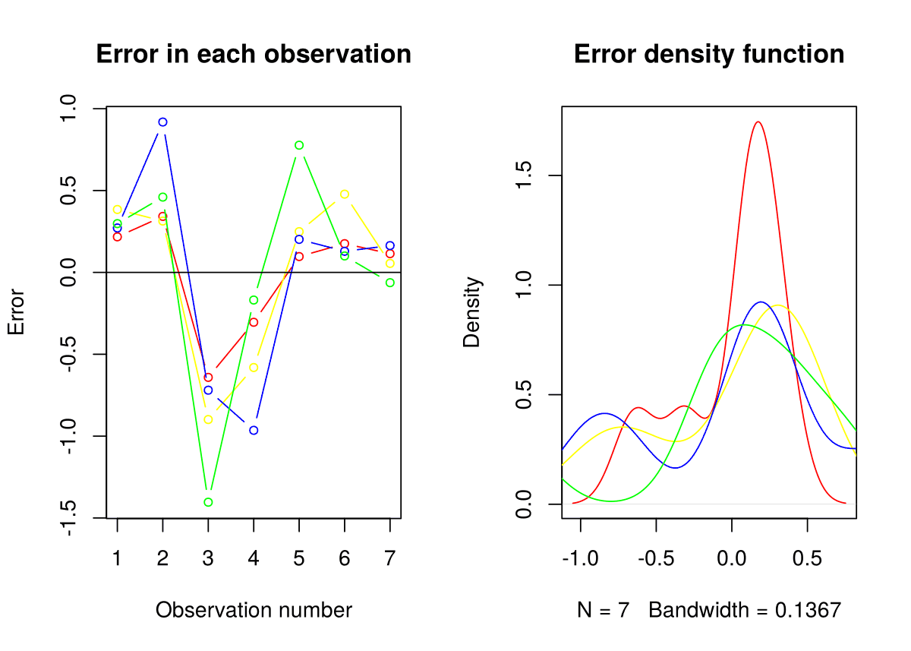
Although the mean of the errors is zero, in the density function we can see that they do not resemble a normal distribution very much. This may be due to the small n that we have.
I also find it curious that, in the third observation, all of them gave a very negative value. We can see that, in the first plot of this section, the third observation of each line is lower than usual and later, in the regression line, they also come out below. Taking into account how these vectors were computed, this leads me to conclude that some event may have taken place at the third observation, that is, in 1984.
6. Multiple linear regression by laws
Along the same lines, we will carry out a multiple linear regression depending on the laws. That is, we will fit four multiple linear regressions, one for each type of law. Seeing the results of the previous sections, we expect to obtain better results with this type of model.
We compute the full models.
Show code
fullmodelNN<-lm(VectorNNperinc~VectorNNbeertax+VectorNNmrall+VectorNNvmiles+VectorNNunrate)
summary(fullmodelNN)##
## Call:
## lm(formula = VectorNNperinc ~ VectorNNbeertax + VectorNNmrall +
## VectorNNvmiles + VectorNNunrate)
##
## Residuals:
## 1 2 3 4 5 6 7
## -82.39 79.69 -45.90 -36.63 97.17 50.13 -62.08
##
## Coefficients:
## Estimate Std. Error t value Pr(>|t|)
## (Intercept) 24280.943 6617.288 3.669 0.0669 .
## VectorNNbeertax -15642.977 7895.101 -1.981 0.1861
## VectorNNmrall 8.986 1934.563 0.005 0.9967
## VectorNNvmiles 31.066 464.293 0.067 0.9527
## VectorNNunrate -302.712 183.353 -1.651 0.2405
## ---
## Signif. codes: 0 '***' 0.001 '**' 0.01 '*' 0.05 '.' 0.1 ' ' 1
##
## Residual standard error: 127.3 on 2 degrees of freedom
## Multiple R-squared: 0.9915, Adjusted R-squared: 0.9744
## F-statistic: 58.04 on 4 and 2 DF, p-value: 0.01701The result of the model is significant and the R-squared we obtain is better than in the simple regression (from 97% to 99%). However, the other parameters get worse (residual standard deviation, p-value and F-statistic). Also, no vector turns out significant; we will have to see what happens when we apply stepAIC.
Show code
fullmodelNY<-lm(VectorNYperinc~VectorNYbeertax+VectorNYmrall+VectorNYvmiles+VectorNYunrate)
summary(fullmodelNY)##
## Call:
## lm(formula = VectorNYperinc ~ VectorNYbeertax + VectorNYmrall +
## VectorNYvmiles + VectorNYunrate)
##
## Residuals:
## 1 2 3 4 5 6 7
## -7.660 -13.141 41.265 -83.707 73.330 -11.896 1.809
##
## Coefficients:
## Estimate Std. Error t value Pr(>|t|)
## (Intercept) 31537.41 6628.69 4.758 0.0415 *
## VectorNYbeertax -3749.88 2979.21 -1.259 0.3352
## VectorNYmrall -4570.83 854.31 -5.350 0.0332 *
## VectorNYvmiles -436.88 489.20 -0.893 0.4661
## VectorNYunrate -90.07 96.46 -0.934 0.4490
## ---
## Signif. codes: 0 '***' 0.001 '**' 0.01 '*' 0.05 '.' 0.1 ' ' 1
##
## Residual standard error: 85.04 on 2 degrees of freedom
## Multiple R-squared: 0.9928, Adjusted R-squared: 0.9783
## F-statistic: 68.51 on 4 and 2 DF, p-value: 0.01444In this model the p-value, the F-statistic and above all the R-squared improve with respect to the simple model. On the other hand, the standard error increases and there are parameters that are not significant. Therefore, we will apply stepAIC.
Show code
fullmodelYN<-lm(VectorYNperinc~VectorYNbeertax+VectorYNmrall+VectorYNvmiles+VectorYNunrate)
summary(fullmodelYN)##
## Call:
## lm(formula = VectorYNperinc ~ VectorYNbeertax + VectorYNmrall +
## VectorYNvmiles + VectorYNunrate)
##
## Residuals:
## 1 2 3 4 5 6 7
## 29.7038 -10.0877 -90.7089 25.9198 66.9613 -21.2021 -0.5863
##
## Coefficients:
## Estimate Std. Error t value Pr(>|t|)
## (Intercept) 6080.50 2906.06 2.092 0.171
## VectorYNbeertax 5605.58 9692.54 0.578 0.621
## VectorYNmrall 772.73 1371.03 0.564 0.630
## VectorYNvmiles 477.76 254.42 1.878 0.201
## VectorYNunrate -139.03 67.11 -2.072 0.174
##
## Residual standard error: 86.07 on 2 degrees of freedom
## Multiple R-squared: 0.9864, Adjusted R-squared: 0.9591
## F-statistic: 36.13 on 4 and 2 DF, p-value: 0.02711Regarding this model, we see that the standard error of the residuals increases, as do the R-squared and the F-statistic. The p-value, on the other hand, gets worse and no parameter is significant. The fact that the model is significant and the parameters are not may be due to multicollinearity, as happens in the NN model. Therefore, as with the two previous models, we will apply stepAIC.
Show code
fullmodelYY<-lm(VectorYYperinc~VectorYYbeertax+VectorYYmrall+VectorYYvmiles+VectorYYunrate)
summary(fullmodelYY)##
## Call:
## lm(formula = VectorYYperinc ~ VectorYYbeertax + VectorYYmrall +
## VectorYYvmiles + VectorYYunrate)
##
## Residuals:
## 1 2 3 4 5 6 7
## -67.447 30.779 21.389 -4.033 69.308 -39.547 -10.450
##
## Coefficients:
## Estimate Std. Error t value Pr(>|t|)
## (Intercept) 4118.48 2172.25 1.896 0.1984
## VectorYYbeertax 11042.95 4067.14 2.715 0.1131
## VectorYYmrall -392.00 384.37 -1.020 0.4151
## VectorYYvmiles 638.22 84.08 7.591 0.0169 *
## VectorYYunrate -37.65 46.53 -0.809 0.5034
## ---
## Signif. codes: 0 '***' 0.001 '**' 0.01 '*' 0.05 '.' 0.1 ' ' 1
##
## Residual standard error: 78.89 on 2 degrees of freedom
## Multiple R-squared: 0.9849, Adjusted R-squared: 0.9546
## F-statistic: 32.55 on 4 and 2 DF, p-value: 0.03003In this last model, the following happens: the standard error of the residuals increases, the F-statistic increases and the R-squared also increases. On the other hand, the p-value decreases and becomes significant, unlike what happened in the simple one. As with the other models, we will apply stepAIC to improve it.
From these four models, we can conclude that in all of them, with respect to the corresponding simple model, the standard error of the residuals gets worse. I think this may be because we have parameters that are “redundant” or make the model worse and that we will try to remove with stepAIC. We can also see an important increase in the R-squared value.
We will apply stepAIC to obtain the best possible model.
Show code
#reducedmodelNN<-stepAIC(fullmodelNN,direction="backward")
##reducedmodelNY<-stepAIC(fullmodelNY,direction="backward")
#reducedmodelYN<-stepAIC(fullmodelYN,direction="backward")
#reducedmodelYY<-stepAIC(fullmodelYY,direction="backward")
##Note: as mentioned before, I had errors with the stepAIC function in R Markdown; if the previous lines do not work, run the following ones. They are the result obtained.
reducedmodelNN<-lm(VectorNNperinc~VectorNNbeertax+VectorNNunrate)
reducedmodelNY<-lm(VectorNYperinc~VectorNYbeertax+VectorNYmrall+VectorNYunrate+VectorNYvmiles)
reducedmodelYN<-lm(VectorYNperinc~VectorYNbeertax+VectorYNunrate+VectorYNvmiles)
reducedmodelYY<-lm(VectorYYperinc~VectorYYbeertax+VectorYYvmiles)
summary(reducedmodelNN)##
## Call:
## lm(formula = VectorNNperinc ~ VectorNNbeertax + VectorNNunrate)
##
## Residuals:
## 1 2 3 4 5 6 7
## -82.95 81.84 -41.30 -44.20 95.75 50.39 -59.52
##
## Coefficients:
## Estimate Std. Error t value Pr(>|t|)
## (Intercept) 24602.65 1578.29 15.588 9.89e-05 ***
## VectorNNbeertax -15634.33 3519.19 -4.443 0.0113 *
## VectorNNunrate -311.92 49.34 -6.322 0.0032 **
## ---
## Signif. codes: 0 '***' 0.001 '**' 0.01 '*' 0.05 '.' 0.1 ' ' 1
##
## Residual standard error: 90.12 on 4 degrees of freedom
## Multiple R-squared: 0.9914, Adjusted R-squared: 0.9872
## F-statistic: 231.5 on 2 and 4 DF, p-value: 7.335e-05Show code
summary(reducedmodelNY)##
## Call:
## lm(formula = VectorNYperinc ~ VectorNYbeertax + VectorNYmrall +
## VectorNYunrate + VectorNYvmiles)
##
## Residuals:
## 1 2 3 4 5 6 7
## -7.660 -13.141 41.265 -83.707 73.330 -11.896 1.809
##
## Coefficients:
## Estimate Std. Error t value Pr(>|t|)
## (Intercept) 31537.41 6628.69 4.758 0.0415 *
## VectorNYbeertax -3749.88 2979.21 -1.259 0.3352
## VectorNYmrall -4570.83 854.31 -5.350 0.0332 *
## VectorNYunrate -90.07 96.46 -0.934 0.4490
## VectorNYvmiles -436.88 489.20 -0.893 0.4661
## ---
## Signif. codes: 0 '***' 0.001 '**' 0.01 '*' 0.05 '.' 0.1 ' ' 1
##
## Residual standard error: 85.04 on 2 degrees of freedom
## Multiple R-squared: 0.9928, Adjusted R-squared: 0.9783
## F-statistic: 68.51 on 4 and 2 DF, p-value: 0.01444Show code
summary(reducedmodelYN)##
## Call:
## lm(formula = VectorYNperinc ~ VectorYNbeertax + VectorYNunrate +
## VectorYNvmiles)
##
## Residuals:
## 1 2 3 4 5 6 7
## 33.011 -9.531 -77.829 10.993 77.635 -57.126 22.846
##
## Coefficients:
## Estimate Std. Error t value Pr(>|t|)
## (Intercept) 5058.90 1996.53 2.534 0.0851 .
## VectorYNbeertax 10381.12 4136.82 2.509 0.0870 .
## VectorYNunrate -119.37 50.39 -2.369 0.0986 .
## VectorYNvmiles 601.26 113.63 5.291 0.0132 *
## ---
## Signif. codes: 0 '***' 0.001 '**' 0.01 '*' 0.05 '.' 0.1 ' ' 1
##
## Residual standard error: 75.66 on 3 degrees of freedom
## Multiple R-squared: 0.9842, Adjusted R-squared: 0.9684
## F-statistic: 62.22 on 3 and 3 DF, p-value: 0.003361Show code
summary(reducedmodelYY)##
## Call:
## lm(formula = VectorYYperinc ~ VectorYYbeertax + VectorYYvmiles)
##
## Residuals:
## 1 2 3 4 5 6 7
## -117.83 50.77 36.85 44.17 22.35 -13.70 -22.59
##
## Coefficients:
## Estimate Std. Error t value Pr(>|t|)
## (Intercept) 4465.20 1625.23 2.747 0.051510 .
## VectorYYbeertax 8423.78 2549.22 3.304 0.029809 *
## VectorYYvmiles 610.93 56.82 10.752 0.000424 ***
## ---
## Signif. codes: 0 '***' 0.001 '**' 0.01 '*' 0.05 '.' 0.1 ' ' 1
##
## Residual standard error: 72.4 on 4 degrees of freedom
## Multiple R-squared: 0.9745, Adjusted R-squared: 0.9618
## F-statistic: 76.47 on 2 and 4 DF, p-value: 0.0006497Looking at the reduced models we can conclude that all the parameters have improved: the standard error of the residuals, the F-statistic, the R-squared and the p-value. Therefore, these are the best models we can get to predict income per capita from the other parameters. It should be mentioned that the only model that has not changed is the one that follows these laws: no jail and yes community service.
7. Logistic regression
So far, we have not used the minimum legal age column (mlda) for anything. I find it interesting, and perhaps we can get some information by applying logistic regression, since we have used linear regression a lot.
7.1 General data
First of all, we will see whether there is any general trend, or what changes can be seen over the years, with respect to mlda in the states.
Show code
#We compute the minimum and maximum age in our data.frame
edadMIN<-data$mlda[1]
edadMAX<-data$mlda[1]
i<-1
while (i<=dim(data)[1]) {
if (data$mlda[i]<edadMIN) {
edadMIN<-data$mlda[i]
}
if (data$mlda[i]>edadMAX) {
edadMAX<-data$mlda[i]
}
i<-i+1
}
edadMIN## [1] 18Show code
edadMAX## [1] 21As we can see, our range of ages will be between 18 and 21, so we will take the opportunity to compute the following: a breakdown by years and ages in each state.
Show code
#We initialise the variables
i<-1
cont18_1982<-0
cont18_1983<-0
cont18_1984<-0
cont18_1985<-0
cont18_1986<-0
cont18_1987<-0
cont18_1988<-0
cont19_1982<-0
cont19_1983<-0
cont19_1984<-0
cont19_1985<-0
cont19_1986<-0
cont19_1987<-0
cont19_1988<-0
cont20_1982<-0
cont20_1983<-0
cont20_1984<-0
cont20_1985<-0
cont20_1986<-0
cont20_1987<-0
cont20_1988<-0
cont21_1982<-0
cont21_1983<-0
cont21_1984<-0
cont21_1985<-0
cont21_1986<-0
cont21_1987<-0
cont21_1988<-0
while (i<=dim(data)[1]) {
if (data$year[i]==1982){
if (data$mlda[i]>=18 && data$mlda[i]<19) {
cont18_1982<-cont18_1982+1
}
if (data$mlda[i]>=19 && data$mlda[i]<20) {
cont19_1982<-cont19_1982+1
}
if (data$mlda[i]>=20 && data$mlda[i]<21) {
cont20_1982<-cont20_1982+1
}
if (data$mlda[i]==21) {
cont21_1982<-cont21_1982+1
}
}
if (data$year[i]==1983){
if (data$mlda[i]>=18 && data$mlda[i]<19) {
cont18_1983<-cont18_1983+1
}
if (data$mlda[i]>=19 && data$mlda[i]<20) {
cont19_1983<-cont19_1983+1
}
if (data$mlda[i]>=20 && data$mlda[i]<21) {
cont20_1983<-cont20_1983+1
}
if (data$mlda[i]==21) {
cont21_1983<-cont21_1983+1
}
}
if (data$year[i]==1984){
if (data$mlda[i]>=18 && data$mlda[i]<19) {
cont18_1984<-cont18_1984+1
}
if (data$mlda[i]>=19 && data$mlda[i]<20) {
cont19_1984<-cont19_1984+1
}
if (data$mlda[i]>=20 && data$mlda[i]<21) {
cont20_1984<-cont20_1984+1
}
if (data$mlda[i]==21) {
cont21_1984<-cont21_1984+1
}
}
if (data$year[i]==1985){
if (data$mlda[i]>=18 && data$mlda[i]<19) {
cont18_1985<-cont18_1985+1
}
if (data$mlda[i]>=19 && data$mlda[i]<20) {
cont19_1985<-cont19_1985+1
}
if (data$mlda[i]>=20 && data$mlda[i]<21) {
cont20_1985<-cont20_1985+1
}
if (data$mlda[i]==21) {
cont21_1985<-cont21_1985+1
}
}
if (data$year[i]==1986){
if (data$mlda[i]>=18 && data$mlda[i]<19) {
cont18_1986<-cont18_1986+1
}
if (data$mlda[i]>=19 && data$mlda[i]<20) {
cont19_1986<-cont19_1986+1
}
if (data$mlda[i]>=20 && data$mlda[i]<21) {
cont20_1986<-cont20_1986+1
}
if (data$mlda[i]==21) {
cont21_1986<-cont21_1986+1
}
}
if (data$year[i]==1987){
if (data$mlda[i]>=18 && data$mlda[i]<19) {
cont18_1987<-cont18_1987+1
}
if (data$mlda[i]>=19 && data$mlda[i]<20) {
cont19_1987<-cont19_1987+1
}
if (data$mlda[i]>=20 && data$mlda[i]<21) {
cont20_1987<-cont20_1987+1
}
if (data$mlda[i]==21) {
cont21_1987<-cont21_1987+1
}
}
if (data$year[i]==1988){
if (data$mlda[i]>=18 && data$mlda[i]<19) {
cont18_1988<-cont18_1988+1
}
if (data$mlda[i]>=19 && data$mlda[i]<20) {
cont19_1988<-cont19_1988+1
}
if (data$mlda[i]>=20 && data$mlda[i]<21) {
cont20_1988<-cont20_1988+1
}
if (data$mlda[i]==21) {
cont21_1988<-cont21_1988+1
}
}
i<-i+1
}
#To make the conclusions easier, I rounded the ages of the states that had a decimal age
#We join the counters for each age to form vectors
vector18<-c(cont18_1982,cont18_1983,cont18_1984,cont18_1985,cont18_1986,cont18_1987,cont18_1988)
vector19<-c(cont19_1982,cont19_1983,cont19_1984,cont19_1985,cont19_1986,cont19_1987,cont19_1988)
vector20<-c(cont20_1982,cont20_1983,cont20_1984,cont20_1985,cont20_1986,cont20_1987,cont20_1988)
vector21<-c(cont21_1982,cont21_1983,cont21_1984,cont21_1985,cont21_1986,cont21_1987,cont21_1988)
sum(vector18)+sum(vector19)+sum(vector20)+sum(vector21)==dim(data)[1] #A way to check that we did it right## [1] TRUEShow code
#We draw the results
layout(grid2)
plot(data$year[1:7],vector18,type = 'b',xlab = "Year",ylab = "No. of states, age 18",col="green")
plot(data$year[1:7],vector19,type = 'b',xlab = "Year",ylab = "No. of states, age 19",col="red")
plot(data$year[1:7],vector20,type = 'b',xlab = "Year",ylab = "No. of states, age 20",col="blue")
plot(data$year[1:7],vector21,type = 'b',xlab = "Year",ylab = "No. of states, age 21")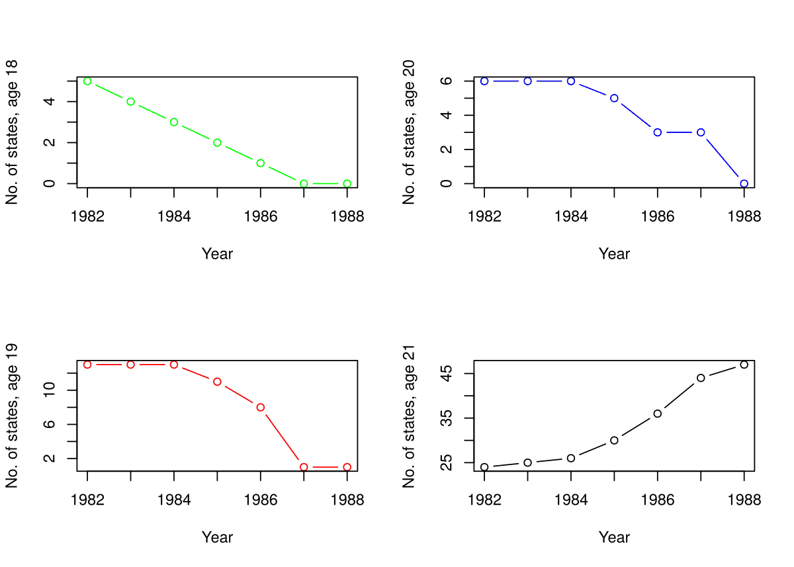
Show code
#Keeping the colours for each age, we draw them all in one plot
layout(1)
plot(data$year[1:7],vector18,type = 'b',ylim = c(0,47),col="green",xlab = "Year",ylab = "No. of states",main="Evolution of the number of states by mlda")
lines(data$year[1:7],vector19,type = 'b',col="red")
lines(data$year[1:7],vector20,type = 'b',col="blue")
lines(data$year[1:7],vector21,type = 'b')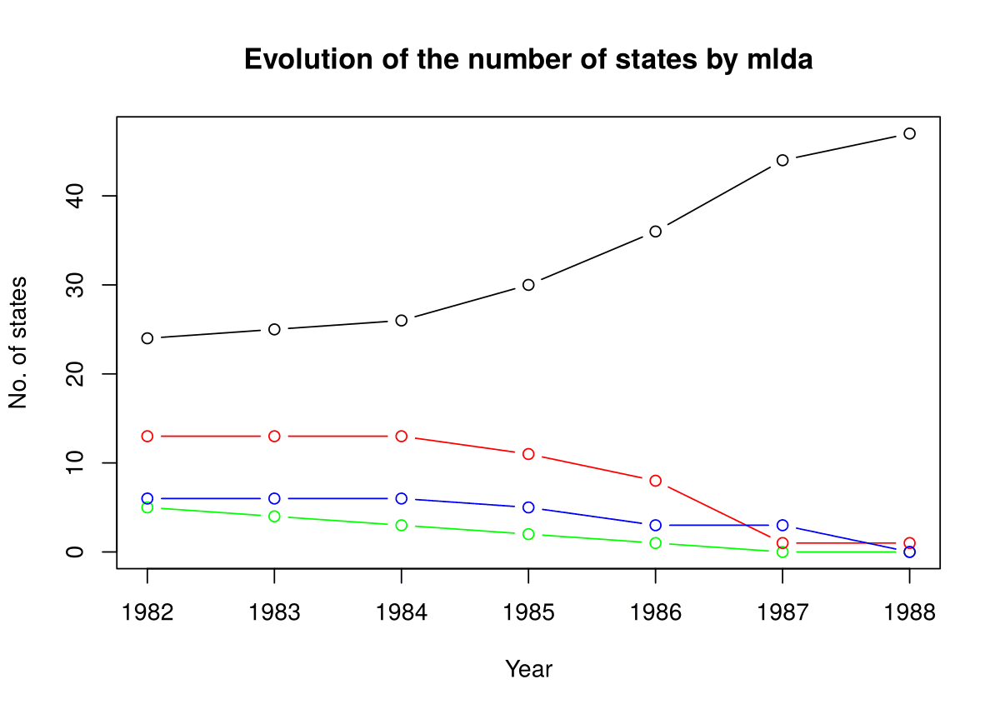
Looking at these plots, we can say that the states with an mlda of 18, 19 and 20 decrease over the years. Because of this, the number of states with age 21 grows a lot.
We will add up the lines for ages 18, 19 and 20 and draw it together with the evolution of age 21. That is, we will split between those with 21 and those without.
Show code
vectorNO21<-vector18+vector19+vector20
plot(data$year[1:7],vector21,type = 'b',ylim = c(1,47),xlab = "Year",ylab = "No. of states",main="Evolution of the number of states by mlda")
lines(data$year[1:7],vectorNO21,type = 'b',col="red")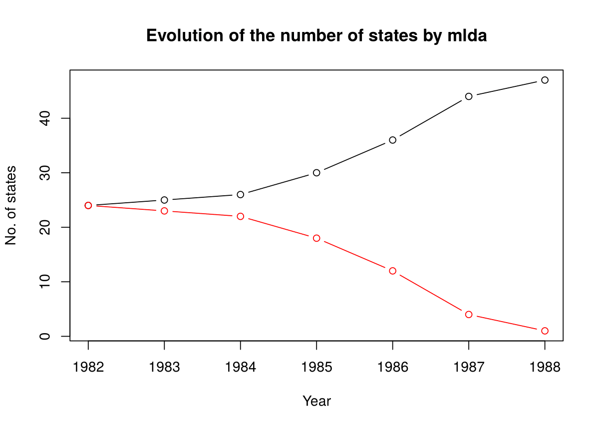
As can be seen, here too the trends are clearly visible. Also, since each year the two have to add up to the same total (48), the two are equal but opposite.
We can say that perhaps this trend, in which states are moving towards raising the minimum legal age to 21, has something to do with the good results obtained (in general) in the other parameters. For example, the positive trend in personal income or the fall in the unemployment rate. But I still think it would need more study before we could state this.
7.2 First logistic regression
We will carry out the first logistic regression. We will distinguish whether or not states have an mlda of 21 and order them by years.
Show code
#We initialise the variables
i<-1
j<-1
j2<-1
j3<-1
j4<-1
j5<-1
j6<-1
j7<-1
reg82<-0
reg83<-0
reg84<-0
reg85<-0
reg86<-0
reg87<-0
reg88<-0
while (i<=dim(data)[1]) {
if (data$year[i]==1982) {
if (data$mlda[i]==21) {
reg82[j]<-1
j<-j+1
}
else {
reg82[j]<-0
j<-j+1
}
}
if (data$year[i]==1983) {
if (data$mlda[i]==21) {
reg83[j2]<-1
j2<-j2+1
}
else {
reg83[j2]<-0
j2<-j2+1
}
}
if (data$year[i]==1984) {
if (data$mlda[i]==21) {
reg84[j3]<-1
j3<-j3+1
}
else {
reg84[j3]<-0
j3<-j3+1
}
}
if (data$year[i]==1985) {
if (data$mlda[i]==21) {
reg85[j4]<-1
j4<-j4+1
}
else {
reg85[j4]<-0
j4<-j4+1
}
}
if (data$year[i]==1986) {
if (data$mlda[i]==21) {
reg86[j5]<-1
j5<-j5+1
}
else {
reg86[j5]<-0
j5<-j5+1
}
}
if (data$year[i]==1987) {
if (data$mlda[i]==21) {
reg87[j6]<-1
j6<-j6+1
}
else {
reg87[j6]<-0
j6<-j6+1
}
}
if (data$year[i]==1988) {
if (data$mlda[i]==21) {
reg88[j7]<-1
j7<-j7+1
}
else {
reg88[j7]<-0
j7<-j7+1
}
}
i<-i+1
}
#We join everything, in order, into the new vector
todos<-c(reg82,reg83,reg84,reg85,reg86,reg87,reg88)
logisticmodel <- glm(todos ~ seq(1,336,1), family = "binomial")
summary(logisticmodel)##
## Call:
## glm(formula = todos ~ seq(1, 336, 1), family = "binomial")
##
## Deviance Residuals:
## Min 1Q Median 3Q Max
## -2.2767 -1.0801 0.5273 0.8317 1.4370
##
## Coefficients:
## Estimate Std. Error z value Pr(>|z|)
## (Intercept) -0.620256 0.236816 -2.619 0.00882 **
## seq(1, 336, 1) 0.009328 0.001448 6.443 1.17e-10 ***
## ---
## Signif. codes: 0 '***' 0.001 '**' 0.01 '*' 0.05 '.' 0.1 ' ' 1
##
## (Dispersion parameter for binomial family taken to be 1)
##
## Null deviance: 415.78 on 335 degrees of freedom
## Residual deviance: 366.43 on 334 degrees of freedom
## AIC: 370.43
##
## Number of Fisher Scoring iterations: 4Show code
Probs <- predict(logisticmodel, type = "response")
library(ggplot2)
df <- data.frame(x=seq(1,336,1), status = todos, Probs=Probs)
p <- ggplot(aes(col=status), data=df) +
geom_hline(aes(yintercept=0)) +
geom_segment(aes(x,status,xend=x,yend=status-status)) +
geom_point(aes(x,status),size=3)
p <- p + geom_line(aes(x, Probs), col ="red")
p
Although the regression comes out significant and we draw it, I do not think it is the best way to draw conclusions, since the x axis is “random”. It is true that it is ordered in blocks, the first 48 from 1982, the next 48 from 1983 and so on up to 1988, but within the blocks there is no particular order, it just follows the order of the data.frame. Therefore, I think that, although we can see the positive trend, it is not the best one for drawing conclusions and that we can find another model that gives us better results.
7.3 Second logistic regression
We will fit a logistic regression where we can see the evolution of the years on the x axis. To do so, we will follow steps similar to those of the class practical.
Show code
#We create a data.frame to hold the data
data1<-data.frame(Year=NA,Total=NA,num_21=NA,numNO_21=NA)
data1[1:7,1]<-seq(1982,1988,1)
data1[1:7,2]<-vectorNO21+vector21
data1[1:7,3]<-vector21
data1[1:7,4]<-vectorNO21
#We create the model
glm.out <- glm(cbind(num_21, Total-num_21) ~ Year, family=binomial(logit), data=data1)
summary(glm.out)##
## Call:
## glm(formula = cbind(num_21, Total - num_21) ~ Year, family = binomial(logit),
## data = data1)
##
## Deviance Residuals:
## 1 2 3 4 5 6 7
## 1.4408 0.1495 -1.1341 -1.4589 -0.9180 1.0867 1.9654
##
## Coefficients:
## Estimate Std. Error z value Pr(>|z|)
## (Intercept) -907.44576 139.59340 -6.501 8.00e-11 ***
## Year 0.45763 0.07035 6.505 7.75e-11 ***
## ---
## Signif. codes: 0 '***' 0.001 '**' 0.01 '*' 0.05 '.' 0.1 ' ' 1
##
## (Dispersion parameter for binomial family taken to be 1)
##
## Null deviance: 61.818 on 6 degrees of freedom
## Residual deviance: 11.400 on 5 degrees of freedom
## AIC: 41.868
##
## Number of Fisher Scoring iterations: 4Show code
#We draw
plot(num_21/Total ~ Year, data=data1)
lines(data1$Year, glm.out$fitted, type="l", col="red")
title(main="Mlda 21 data with Fitted Logistic Regression Line")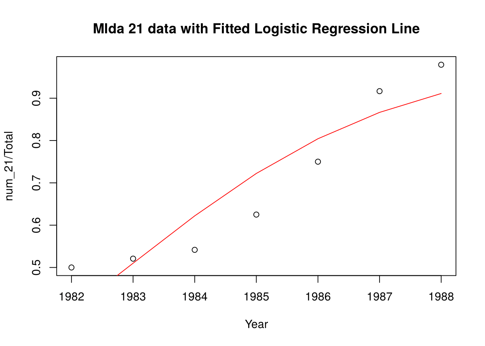
With this model, we have managed to improve on what we had before. Although it is not visible in the plot, the summary of the data improves a lot. The AIC is much lower and the p-values of the intercept and beta1 are much more significant than before.
We could fit another logistic regression with the fourth column of the data.frame. But we would not obtain important information since, as mentioned before, because the two add up to 48, one is the opposite of the other. Therefore, we would obtain the same model with a single difference: beta1 would have the same value but with a negative sign.